AI: The Rational Mind
How machines perceive, search, reason under uncertainty, decide — and learn from experience.
∴Annotation
What does it mean for a machine to act rationally? This interactive book answers that question by following one unifying idea — the rational agent — through ten chapters of classical and modern Artificial Intelligence. A rational agent is not one that is always right; it is one that, given what it has perceived and what it knows, chooses the action that maximizes its expected performance.
We begin by describing agents and the environments they inhabit. We then teach those agents to search through enormous state spaces, to optimize when only the final configuration matters, and to outwit an adversary in a game. Next, we let uncertainty in: probability theory, Bayesian networks and Hidden Markov Models give an agent the mathematics to reason about things it cannot observe directly. Finally, Markov Decision Processes, reinforcement learning, decision theory and neural networks show how an agent can act well over time and improve from data. The final chapter steps outside the algorithm and asks how society governs rational machines, using the Republic of Kazakhstan’s 2025 Law on Artificial Intelligence as a case study.
Every chapter combines rigorous explanations with formulas, annotated code, interactive demonstrations, real-world cases in “Did You Know?” boxes, and a mini-quiz to check your understanding.
§Contents
16:9Book Presentation Card
A screenshot-ready card. Press Presentation mode to show it full-screen on a clean background, take a screenshot, then press Esc to return.
AI: The
Rational Mind
An interactive web book that follows the idea of the rational agent from search and game playing to Bayesian reasoning, reinforcement learning, neural networks and Kazakhstan’s AI law. Each chapter pairs clear theory with live demos, code and mini-quizzes.
20 quiz questions
Agents & Environments
In the modern view, Artificial Intelligence is the study of agents that do the right thing. Before we can build such agents, we need a precise vocabulary: what an agent is, what kind of world it lives in, and what “right” actually means.
1.1What is an agent?
An agent is anything that perceives its environment through sensors and acts upon that environment through actuators. A human has eyes and ears as sensors and hands and voice as actuators; a robot has cameras and LiDAR, motors and grippers; a software agent receives files, network packets or keystrokes and acts by writing files, sending packets or displaying output.
A percept is the agent’s perceptual input at a given instant; the percept sequence is the complete history of everything the agent has ever perceived. Mathematically, an agent’s behaviour is described by the agent function, which maps every possible percept sequence to an action:
This distinction matters: the agent function for chess could in principle be written as a gigantic lookup table, but such a table would have more entries than there are atoms in the observable universe. The central challenge of AI is to write compact programs that produce rational behaviour — agent = architecture + program.
1.2Rationality
Rationality is always relative to a performance measure — an objective criterion that evaluates any given sequence of environment states. The standard definition is:
For each possible percept sequence, a rational agent selects an action that is expected to maximize its performance measure, given the evidence provided by the percept sequence and whatever built-in knowledge the agent has.
What is rational at any moment therefore depends on four things: (1) the performance measure that defines success; (2) the agent’s prior knowledge of the environment; (3) the actions it can perform; and (4) its percept sequence to date.
Three subtleties follow from this definition:
- Rationality ≠ omniscience. A rational agent maximizes expected performance, not actual outcome. Crossing the street after carefully looking both ways is rational even if, against all odds, something falls from the sky.
- Information gathering is part of rationality. Looking before crossing is itself an action chosen because it improves future decisions. Rational agents explore and learn.
- Autonomy. An agent that relies only on its designer’s prior knowledge, rather than on its own percepts and learning, lacks autonomy and breaks down when the environment differs from the designer’s assumptions.
A classic warning concerns the design of the performance measure itself: measure what you actually want in the environment, not how you think the agent should behave. If a vacuum robot were rewarded for the amount of dirt it sucks up, a perfectly rational robot might dump the dirt back onto the floor and clean it again, forever.
1.3Specifying the task: the PEAS model
Before designing an agent we must specify its task environment as completely as possible. The PEAS description does exactly that: Performance measure, Environment, Actuators, Sensors.
| Agent | Performance | Environment | Actuators | Sensors |
|---|---|---|---|---|
| Automated taxi | Safe, fast, legal, comfortable trip; maximize profit; minimize impact on other road users | Roads, other traffic, police, pedestrians, customers, weather | Steering, accelerator, brake, signal, horn, display, speech | Cameras, radar, LiDAR, speedometer, GPS, accelerometer, engine sensors, microphone |
| Medical diagnosis system | Healthy patient, accurate diagnosis, reduced costs | Patient, hospital, medical staff | Display of questions, tests, diagnoses, treatments | Keyboard / voice entry of symptoms, findings, patient answers, lab results |
| Robot vacuum | Cleanliness, energy efficiency, coverage time, no damage | Rooms, floor types, furniture, pets, people | Wheels, brushes, suction, docking | Bump & cliff sensors, camera or LiDAR, dirt sensor, wheel odometry |
Writing a PEAS description forces the designer to make hidden assumptions explicit: a taxi that optimizes only for speed is dangerous; one that optimizes only for safety never leaves the parking lot. Real performance measures are trade-offs, which is precisely why we will later need utility functions.
1.4Properties of task environments
Environments vary along several dimensions that largely determine which agent design is appropriate:
Fully vs partially observable
Do the sensors give access to the complete relevant state at each moment? Noisy or limited sensors make the world partially observable, so the agent must maintain beliefs.
Single vs multi-agent
Other agents may be competitive (chess opponent) or cooperative (other cars avoiding collisions). Multi-agent settings invite communication and randomized strategies.
Deterministic vs stochastic
Is the next state completely determined by the current state and action? If outcomes are uncertain and quantified by probabilities, the environment is stochastic.
Episodic vs sequential
In episodic tasks each decision is independent (classifying parts on an assembly line). In sequential tasks the current decision affects all future ones (chess, driving).
Static vs dynamic
Does the world change while the agent deliberates? Semi-dynamic: the world stays the same but the score changes with time (chess with a clock).
Discrete vs continuous
Applies to states, time, percepts and actions. Chess has a finite number of states; driving involves continuous positions, speeds and steering angles.
A final distinction — known vs unknown — refers not to the environment itself but to the agent’s knowledge of the “laws of physics” of the environment. A known environment can still be partially observable (solitaire card games), and an unknown one can be fully observable (a new video game whose rules you must discover).
| Task | Observable | Agents | Deterministic | Episodic | Static | Discrete |
|---|---|---|---|---|---|---|
| Crossword puzzle | Fully | Single | Deterministic | Sequential | Static | Discrete |
| Chess with a clock | Fully | Multi | Deterministic | Sequential | Semi | Discrete |
| Poker | Partially | Multi | Stochastic | Sequential | Static | Discrete |
| Taxi driving | Partially | Multi | Stochastic | Sequential | Dynamic | Continuous |
| Medical diagnosis | Partially | Single | Stochastic | Sequential | Dynamic | Continuous |
| Image classification | Fully | Single | Deterministic | Episodic | Semi | Continuous |
Partially observable, multi-agent, stochastic, sequential, dynamic, continuous and unknown. Taxi driving is hard in almost every one of these senses — which is exactly why it remained a grand challenge long after computers mastered chess.
1.5Four agent architectures
Agent programs can be arranged in order of increasing generality. Each architecture adds a new capability on top of the previous one.
Simple reflex agent
Chooses actions based only on the current percept, using condition–action rules (“if car-in-front-is-braking then initiate-braking”). Extremely fast and simple, but correct only when the environment is fully observable. In partially observable worlds it can fall into infinite loops; randomizing its actions can sometimes help it escape.
Model-based reflex agent
Maintains an internal state that summarizes the unobserved parts of the world. To update it, the agent needs a transition model (how the world evolves and how its actions change it) and a sensor model (how world states are reflected in percepts). It still acts by rules, but on its best estimate of the state.
Goal-based agent
Knowing the current state is not always enough — at a road junction the taxi can turn left, right or go straight. A goal-based agent combines its model with goal information and asks “what will happen if I do this, and will it bring me closer to the goal?” This is the domain of search and planning. Less efficient than reflexes, but far more flexible: changing the goal requires no rewriting of rules.
Utility-based agent
Goals provide only a binary “happy / unhappy” distinction. A utility function — an internalization of the performance measure — assigns a real number to each state, allowing the agent to trade off conflicting goals (speed vs safety) and to weigh the likelihood of success. Under uncertainty, it chooses the action that maximizes expected utility (Chapter 8).
Any of these can be turned into a learning agent, which consists of a performance element (selects actions), a critic (judges how well the agent is doing with respect to a fixed performance standard), a learning element (improves the performance element based on the critic’s feedback) and a problem generator (suggests exploratory actions that lead to new, informative experiences).
def simple_reflex_agent(percept, rules):
state = interpret_input(percept) # only the CURRENT percept
rule = match(state, rules)
return rule.action
class ModelBasedReflexAgent:
def __init__(self, rules, transition_model, sensor_model):
self.state, self.last_action = None, None
self.rules = rules
self.T, self.S = transition_model, sensor_model
def __call__(self, percept):
# update belief about the world using history + models
self.state = update_state(self.state, self.last_action,
percept, self.T, self.S)
rule = match(self.state, self.rules)
self.last_action = rule.action
return self.last_actionThe first Roombas were (almost) reflex agents
iRobot was co-founded by roboticist Rodney Brooks, famous for the subsumption architecture — layers of simple reactive behaviours instead of a detailed world model. Early robot vacuums followed the same philosophy: bump, turn, spiral, follow walls. Modern models build maps with cameras or LiDAR, turning them into model-based and goal-based agents that plan efficient cleaning routes.
Why chess fell before driving
Chess is fully observable, deterministic and discrete; driving is none of these. Computers beat the world chess champion in 1997, while fully driverless taxis began operating commercially only decades later. The environment table above explains the gap better than raw “intelligence” does.
✦Key takeaways
- An agent maps percept sequences to actions; AI seeks compact programs that implement rational agent functions.
- Rationality means maximizing expected performance given the evidence — not being omniscient.
- PEAS and the environment properties determine which architecture is appropriate.
- Reflex → model-based → goal-based → utility-based agents add memory, foresight and trade-offs respectively.
?Mini-Quiz
1. How should the environment of a Texas Hold’em poker agent be classified?
Opponents’ cards are hidden (partially observable), the deck is shuffled (stochastic), and other players are agents with their own goals (multi-agent).
2. An agent keeps an internal estimate of parts of the world it cannot currently see, but still chooses actions with condition–action rules. Which type is it?
Internal state + transition and sensor models = model-based. It becomes goal-based only when it reasons about future outcomes with respect to explicit goals.
Search Algorithms
Route finding, puzzle solving, robot motion planning, even scheduling — many problems reduce to finding a sequence of actions that leads from an initial state to a goal. Search is how a goal-based agent “thinks ahead” before it acts.
2.1Formulating a search problem
A search problem is defined formally by six components:
- State space — the set of all possible states of the environment.
- Initial state — where the agent starts (e.g. In(Arad) in the textbook’s Romania map, or In(Astana) in our local example).
- Actions — ACTIONS(s) returns the actions applicable in state s.
- Transition model — RESULT(s, a) returns the state that results from doing a in s.
- Goal test — determines whether a state is a goal.
- Action cost function — c(s, a, s′); the path cost is the sum of step costs.
The textbook’s classic is driving from Arad to Bucharest. A regional equivalent from our lectures is driving from the capital to the south: initial state In(Astana), goal test In(Almaty), actions Drive(city → neighbouring city), and step cost = road distance in km. One solution is the path Astana → Karaganda → Balkhash → Almaty. Each city is a state, each highway segment an edge, and the path cost is the sum of the three road segments. BFS would find a route with the fewest stops; UCS and A* (with straight-line distance to Almaty as the heuristic) find the shortest one in kilometres.
A solution is a path from the initial state to a goal; an optimal solution has the lowest path cost among all solutions. Choosing the right abstraction is itself an act of intelligence: the 8-puzzle has only 9!/2 = 181,440 reachable states, but a description that tracked the exact angle of every sliding tile would be hopeless.
Search trees, frontiers and redundant paths
Search algorithms superimpose a search tree on the state space: the root is the initial state, and expanding a node generates its children. The set of generated-but-not-yet-expanded nodes is the frontier. Because the same state can be reached by many paths, graph search additionally keeps a reached (or explored) set and refuses to add a state already reached by a cheaper path. This can turn an exponential tree into a linear-size graph exploration.
How we evaluate a search strategy
- Completeness — is it guaranteed to find a solution when one exists?
- Cost optimality — does it find the lowest-cost solution?
- Time and space complexity — expressed with the branching factor b, the depth of the shallowest solution d, the maximum depth m, the optimal cost C* and the minimum action cost ε.
2.2Uninformed (blind) search
Uninformed strategies know nothing about the problem beyond its definition — they cannot tell whether one non-goal state is “more promising” than another. They differ only in the order in which they expand nodes.
Breadth-First Search (BFS)
BFS expands the shallowest unexpanded node first, using a FIFO queue as its frontier. It is complete when b is finite, and optimal when all actions have the same cost, because it finds the shallowest goal first. Its weakness is memory: it stores every node at the current depth, giving O(bd) time and space. With b = 10 and a solution at depth 12, BFS would generate about 1012 nodes; at 1 KB per node, that is roughly a petabyte of memory. Memory, not time, is usually the binding constraint.
Depth-First Search (DFS)
DFS always expands the deepest node in the frontier, using a LIFO stack (or recursion). It needs only O(b·m) memory — it stores a single path plus the unexpanded siblings along it — which is its great advantage. However, it is not complete in infinite state spaces or with cycles (tree-search version), and not optimal: it returns the first goal it stumbles upon, however deep or expensive. Time complexity is O(bm), which may be far worse than O(bd) when m ≫ d.
Iterative Deepening — the best of both
Iterative deepening DFS runs depth-limited DFS with limits 0, 1, 2, … until a goal is found. It is complete and optimal for unit costs like BFS, but uses only O(b·d) memory like DFS. Re-generating shallow levels seems wasteful, but since most nodes live at the bottom level, the overhead is small (about 11% for b = 10). It is the preferred uninformed method when the search space is large and the solution depth unknown.
from collections import deque
def bfs(start, is_goal, successors):
frontier = deque([start]) # FIFO queue
parent = {start: None}
while frontier:
s = frontier.popleft() # oldest node first -> shallowest
if is_goal(s):
return path_to(s, parent)
for nxt in successors(s):
if nxt not in parent: # graph search: skip reached states
parent[nxt] = s
frontier.append(nxt)
def dfs(start, is_goal, successors):
frontier = [start] # LIFO stack
parent = {start: None}
while frontier:
s = frontier.pop() # newest node first -> deepest
if is_goal(s):
return path_to(s, parent)
for nxt in successors(s):
if nxt not in parent:
parent[nxt] = s
frontier.append(nxt)BFS and DFS are the same algorithm. The only difference is one line — popleft() versus pop(), i.e. whether the frontier is a queue or a stack.
2.3Uniform-Cost Search — the bridge to A*
When actions have different costs, the shallowest solution is not necessarily the cheapest. Uniform-Cost Search (UCS) — known in graph theory as Dijkstra’s algorithm — expands the node with the lowest path cost g(n), using a priority queue (min-heap) as its frontier.
Strictly speaking, UCS is still an uninformed algorithm: g(n) measures the cost already paid, not an estimate of what remains. But it is the conceptual bridge to informed search, because A* is simply UCS with a heuristic added to the priority.
- Complete and optimal as long as every action cost is at least some ε > 0.
- Complexity O(b1+⌊C*/ε⌋), which can be much larger than bd when there are many cheap, useless steps.
- The goal test must be applied when a node is expanded, not when it is generated. A goal generated via an expensive path might later be reached more cheaply; testing on expansion guarantees that the first goal popped is optimal.
2.4Informed (heuristic) search
Informed strategies use problem-specific knowledge in the form of a heuristic function h(n) — an estimate of the cost of the cheapest path from node n to a goal. For route finding, a natural heuristic is the straight-line distance to the destination.
Greedy best-first search
Expands the node that appears closest to the goal, f(n) = h(n). It is often fast, but neither optimal nor complete in infinite spaces: it greedily follows the heuristic even when the path that got there was very expensive.
A* search
A* combines the cost so far with the estimated cost to go:
Its optimality depends on two properties of the heuristic:
Never overestimate
0 ≤ h(n) ≤ h*(n), where h* is the true cost to the nearest goal. An admissible heuristic is optimistic. With tree search, admissibility guarantees that A* is optimal.
Triangle inequality
h(n) ≤ c(n, a, n′) + h(n′) for every successor n′. Consistency implies admissibility and guarantees that f never decreases along a path, so the first time A* expands a state, it has found the optimal path to it (graph search).
Why does this work? With a consistent heuristic, A* expands nodes in non-decreasing order of f. Every node with f(n) < C* is expanded before the goal, and no node with f(n) > C* ever is — the heuristic draws “contours” around the start state that stretch toward the goal. Moreover, A* is optimally efficient: no other optimal algorithm using the same heuristic is guaranteed to expand fewer nodes (up to tie-breaking).
Designing good heuristics
For the 8-puzzle, two classic admissible heuristics are h1 = number of misplaced tiles and h2 = sum of Manhattan distances of tiles from their goal positions. Both come from relaxed problems — versions of the puzzle with fewer restrictions (a tile can jump anywhere; a tile can slide onto an occupied square). The cost of an optimal solution to a relaxed problem is always an admissible heuristic for the original.
Because h2(n) ≥ h1(n) for every n, we say h2 dominates h1: A* with h2 never expands more nodes. The general rule is to use the largest admissible heuristic that is cheap to compute — and max(ha, hb) of admissible heuristics is itself admissible. When optimality can be sacrificed for speed, weighted A* uses f = g + w·h with w > 1, guaranteeing a solution at most w times the optimal cost.
import heapq
def a_star(start, goal, neighbors, h):
"""neighbors(s) yields (next_state, step_cost); h(s) is the heuristic."""
frontier = [(h(start), 0, start)] # priority queue ordered by f = g + h
came_from = {start: None}
best_g = {start: 0}
while frontier:
f, g, state = heapq.heappop(frontier)
if state == goal: # goal test on EXPANSION -> optimal
return reconstruct(came_from, goal), g
if g > best_g[state]: # stale queue entry, skip it
continue
for nxt, cost in neighbors(state):
new_g = g + cost
if new_g < best_g.get(nxt, float("inf")):
best_g[nxt] = new_g
came_from[nxt] = state
heapq.heappush(frontier, (new_g + h(nxt), new_g, nxt))
return None, float("inf")
def reconstruct(came_from, node):
path = []
while node is not None:
path.append(node)
node = came_from[node]
return path[::-1]2.5Same skeleton, different data structures
All the algorithms in this chapter share the same skeleton — pop a node, test it, push its successors. What makes them behave so differently is the data structure of the frontier and the key used to order it:
| Algorithm | Frontier | Order by | Complete | Optimal | Time | Space |
|---|---|---|---|---|---|---|
| BFS | FIFO queue | insertion (depth) | Yes¹ | Unit costs only | O(bd) | O(bd) |
| DFS | LIFO stack | most recent | No | No | O(bm) | O(bm) |
| Iterative deepening | Stack + depth limit | most recent | Yes¹ | Unit costs only | O(bd) | O(bd) |
| UCS | Priority queue | g(n) | Yes² | Yes | O(b1+⌊C*/ε⌋) | |
| Greedy best-first | Priority queue | h(n) | No | No | O(bm) | O(bm) |
| A* | Priority queue | g(n) + h(n) | Yes² | Yes³ | Depends on heuristic error; stores all generated nodes | |
¹ if b is finite · ² if action costs ≥ ε > 0 · ³ with an admissible (tree search) or consistent (graph search) heuristic
A*’s main practical limitation is memory, since it keeps every generated node. Memory-bounded variants such as IDA* (iterative deepening on f) and SMA* (drop the worst leaf when memory is full) trade time for space.
A* was invented for a robot named Shakey
In 1968 Peter Hart, Nils Nilsson and Bertram Raphael at the Stanford Research Institute published A* while working on Shakey, the first mobile robot that could reason about its own actions. More than half a century later, variants of A* still guide characters through video-game maps and power route planners on navigation grids.
Your map app is a search algorithm with tricks
Continental road networks have tens of millions of nodes, so plain Dijkstra would be too slow for instant answers. Production route planners pre-process the graph (for example with hierarchical “shortcut” edges or precomputed landmark distances that serve as excellent admissible heuristics) so that a query explores only a tiny fraction of the map.
✦Key takeaways
- A search problem = states, initial state, actions, transition model, goal test, path cost.
- BFS (queue) is complete and optimal for unit costs but memory-hungry; DFS (stack) is memory-light but neither complete nor optimal.
- UCS orders by g(n); A* orders by g(n) + h(n) and is optimal with an admissible/consistent heuristic.
- Better (dominating) heuristics expand fewer nodes; relaxed problems are a systematic source of admissible heuristics.
?Mini-Quiz
1. Which frontier data structure does Uniform-Cost Search use?
UCS always expands the cheapest node so far, so it needs a min-priority queue keyed on g(n). Ordering by h(n) would be greedy best-first search.
2. A heuristic h(n) is called admissible if…
Admissible = optimistic: 0 ≤ h(n) ≤ h*(n). That guarantee is what lets A* stop at the first goal it expands without missing a cheaper one.
Local Search & Optimization
In many problems the path to the goal is irrelevant — only the final configuration matters. Where do we place 8 queens? In what order should a salesman visit 50 cities? Local search keeps just one (or a few) current states and improves them step by step.
3.1The state-space landscape
Local search algorithms operate on complete-state formulations: every state is a candidate solution, and the algorithm moves to neighbouring states. They have two great advantages: they use very little memory (usually constant), and they can find reasonable solutions in huge or continuous spaces where systematic search is impossible.
It helps to imagine a landscape: each state has a location, and its “elevation” is the value of an objective function (to be maximized) or a cost function (to be minimized). The aim is to find the highest peak — the global maximum. A local search algorithm is like a climber in thick fog with amnesia: it sees only the immediate neighbourhood.
3.2Hill climbing and its failure modes
Steepest-ascent hill climbing repeatedly moves to the best neighbour and stops when no neighbour has a higher value. It is greedy local search: simple, fast and often surprisingly effective, but it can get stuck for three classical reasons:
Local maxima
A peak higher than all its neighbours but lower than the global maximum. Once there, every move looks worse, so the algorithm halts.
Plateaus
Flat regions where all neighbours have the same value — either a flat local maximum or a shoulder from which progress is possible. The climber wanders aimlessly or stops.
Ridges
A sequence of local maxima that rises diagonally, while the available moves are axis-aligned. Each single step goes downhill even though the ridge itself climbs.
How serious is this? On randomly generated 8-queens problems, steepest-ascent hill climbing gets stuck about 86% of the time and solves only 14% of instances — although it is very fast, taking about 4 steps when it succeeds and 3 when it gets stuck, in a state space of 88 ≈ 17 million states.
Remedies
- Sideways moves: allow a limited number of equal-value moves to cross shoulders. With up to 100 sideways moves, the 8-queens success rate rises to about 94%.
- Stochastic hill climbing: choose randomly among uphill moves, with probability proportional to steepness.
- First-choice hill climbing: generate random successors until one is better — useful when a state has thousands of neighbours.
- Random-restart hill climbing: “if at first you don’t succeed, try again.” With success probability p per run, the expected number of restarts is 1/p, and the method is complete with probability approaching 1.
3.3Simulated annealing
Hill climbing never moves downhill, so it is incomplete; a pure random walk is complete but hopelessly inefficient. Simulated annealing combines the two, borrowing an idea from metallurgy: a metal heated to a high temperature and cooled slowly settles into a low-energy crystalline state.
At each step the algorithm picks a random neighbour. If it is better, the move is always accepted. If it is worse by ΔE, it is accepted with probability
The temperature T controls the balance between exploration and exploitation:
- High T: e−|ΔE|/T ≈ 1; almost any move is accepted — the search behaves like a random walk and can escape local maxima, plateaus and ridges.
- Low T: the probability drops towards 0; the search becomes ordinary hill climbing and refines the current solution.
- Size of the step matters: at the same temperature, slightly worse moves are accepted far more often than much worse ones.
A cooling schedule (e.g. geometric: T ← α·T with α ≈ 0.95–0.999) lowers the temperature over time. A key theoretical result: if the schedule lowers T slowly enough, simulated annealing finds a global optimum with probability approaching 1 — though “slowly enough” can be impractically slow, so real schedules are tuned empirically.
import math, random
def simulated_annealing(initial, neighbor, value,
T0=100.0, alpha=0.995, T_min=1e-3):
current = best = initial
T = T0
while T > T_min:
nxt = neighbor(current) # a RANDOM successor
delta = value(nxt) - value(current) # > 0 means better (maximization)
if delta > 0 or random.random() < math.exp(delta / T):
current = nxt # always if better, sometimes if worse
if value(current) > value(best):
best = current
T *= alpha # geometric cooling schedule
return best3.4Beam search and genetic algorithms
Local beam search keeps k states instead of one. At each step it generates all successors of all k states and keeps the best k. Unlike k independent random restarts, the threads share information: good states attract more of the search effort. Its stochastic variant chooses successors with probability proportional to their value — a form of natural selection.
Genetic algorithms (GAs)
A GA is a stochastic beam search in which successors are generated by combining two parents rather than modifying a single state. Its ingredients:
- Representation — each individual is encoded as a string (chromosome). For 8-queens: 8 digits, each giving the row of the queen in that column.
- Fitness function — higher is better. For 8-queens: the number of non-attacking pairs of queens (28 for a solution).
- Selection — parents are chosen with probability related to fitness (roulette-wheel or tournament selection).
- Crossover — a crossover point splits the parents and recombines their pieces, so useful “building blocks” from different parents can be joined.
- Mutation — each position is randomly altered with a small probability, maintaining diversity.
- Elitism — the best few individuals are copied unchanged into the next generation, so quality never decreases.
GAs work best when the representation makes crossover meaningful — when contiguous blocks of the chromosome correspond to functionally meaningful components (the idea behind schemata). If crossover just scrambles unrelated parts, a GA is no better than random mutation.
population = random_individuals(N)
for generation in range(G):
fitness = [evaluate(x) for x in population]
next_pop = elite(population, fitness, k) # keep the best k
while len(next_pop) < N:
p1, p2 = select(population, fitness) # tournament / roulette
child = crossover(p1, p2)
child = mutate(child, rate=0.01)
next_pop.append(child)
population = next_pop
return best(population)3.5Case study: the Travelling Salesman Problem
Given n cities and distances between them, find the shortest tour that visits each city exactly once and returns to the start. TSP is NP-hard; for a symmetric instance there are (n − 1)! / 2 distinct tours — 181,440 for 10 cities, but about 6 × 1016 for just 20. Exhaustive search is out of the question, which makes TSP the classic testbed for local search.
- Hill climbing with 2-opt: a neighbour is obtained by removing two edges and reconnecting the tour the other way (reversing the segment between them). Any tour with crossing edges can be shortened this way, so 2-opt quickly removes crossings — but it stops in a local optimum.
- Simulated annealing: the same 2-opt moves, but occasionally accepting longer tours early on, lets the search escape poor local optima. TSP was one of the original applications of simulated annealing.
- Genetic algorithms: a tour is a permutation, so naive one-point crossover produces children with duplicated and missing cities. Permutation-preserving operators such as order crossover (OX) or partially mapped crossover (PMX), and swap/inversion mutations, are required.
Local search trades guarantees for scalability. It rarely proves optimality, but in practice it finds excellent solutions to problems with astronomically many states, using almost no memory.
3.6Regional Case Studies: Local Search in Kazakhstan
The same algorithms apply directly to everyday problems in Kazakhstan. In every case the recipe is identical: define a state (a complete candidate solution), a neighbourhood (small modifications of that state), and an objective function that turns “a good solution” into a single number to minimize. Weighted sums are the most common way to combine several goals into one objective. The weights encode priorities, and changing them changes which solution is optimal.
Case 1 — A courier route through Astana (TSP + 2-opt)
A courier must visit QAIRU → Baiterek → EXPO → Khan Shatyr → Airport and return to the start. This is a small symmetric TSP: a state is a permutation of the stops, and the objective is the total tour length:
Starting from an initial route of 76 km, hill climbing with the 2-opt neighbourhood finds a route of 68 km. 2-opt takes two edges (a, b) and (c, d), replaces them with (a, c) and (b, d), and reverses the segment between them. The move is accepted if d(a,c) + d(b,d) < d(a,b) + d(c,d). Removing one crossing of the route saves 8 km, about 10.5%. With only 5 stops there are just 4!/2 = 12 distinct tours, so exhaustive search could confirm optimality here. For a real courier with 50 stops, 2-opt is the practical tool.
def tour_length(tour, d):
return sum(d[tour[i]][tour[(i + 1) % len(tour)]] for i in range(len(tour)))
def two_opt(tour, d):
improved = True
while improved: # hill climbing until no 2-opt move helps
improved = False
for i in range(1, len(tour) - 1):
for j in range(i + 1, len(tour)):
new = tour[:i] + tour[i:j + 1][::-1] + tour[j + 1:] # reverse a segment
if tour_length(new, d) < tour_length(tour, d):
tour, improved = new, True
return tour
stops = ["QAIRU", "Baiterek", "EXPO", "Khan Shatyr", "Airport"]
# best = two_opt(stops, distance_matrix) # lecture result: 76 km -> 68 kmCase 2 — University timetabling at QAIRU
A state is a complete timetable: every class assigned a time slot and a room. Neighbours are obtained by moving one class to another slot or room, or by swapping two classes. The quality of a timetable is measured by a weighted penalty:
The weights express a hierarchy of constraints. Teacher and room clashes are hard constraints: a timetable with even one of them cannot be used, so each costs 100. Student conflicts are serious but sometimes tolerable (20), and windows are only a matter of comfort (5). With this cost, the search will always remove a clash before it shortens a gap. Timetabling has a huge, rugged landscape full of plateaus (many swaps leave the cost unchanged), so simulated annealing or sideways moves work much better here than plain hill climbing.
Case 3 — Multi-objective routing: a steppe drone and Astana Smart City
Drone over the Kazakh steppe. A delivery or inspection drone plans a route of waypoints across long, sparsely populated distances. Shortest is not always best: headwinds increase energy use, and some corridors are riskier (weather, restricted zones). The objective combines the three:
A neighbour moves one waypoint slightly or swaps two of them. Because the terms are measured in different units, they must be normalized (for example, divided by their maximum values) before weighting. Otherwise the term with the largest raw numbers dominates regardless of its weight.
Edge AI task allocation in Astana Smart City. Thousands of AI tasks, such as traffic-camera analytics, air-quality prediction and parking detection, must be assigned to edge servers or the cloud. A state is one complete assignment; a neighbour reassigns one task to another node. The objective is:
Latency carries the largest weight because real-time services (such as adaptive traffic lights) become useless if they respond late. Processing at the edge lowers latency but may cost more energy per node. Sending to the cloud is cheaper but slower and moves data across the network, which raises security risk. Hill climbing, simulated annealing or a GA explore this trade-off. Changing the weights changes which assignment is optimal, which makes the weights a policy decision as much as a technical one.
Case 4 — Placing 3 mobile medical points with open data
Using settlement and population data from Kazakhstan’s open-data portal data.egov.kz, we choose locations for 3 mobile medical points so that residents are, on average, as close as possible to care. This is the classic p-median facility-location problem (here p = 3):
- State: a set of 3 candidate sites. Neighbour: swap one chosen site for an unchosen candidate (a “swap move”).
- Hill climbing accepts the best swap until none improves J; random restarts or simulated annealing avoid poor local optima, for example all three points clustered around one dense district.
- The problem is closely related to k-means clustering (Chapter 8): assigning each settlement to its nearest point and re-optimizing each point’s location alternate in the same way.
- A fairness variant minimizes the maximum distance instead (the p-center problem), so that no remote village is left far from care. Choosing between the two objectives is an ethical decision, which leads into Chapter 10.
Courier, timetable, drone, smart city, clinics: five different domains with one method. The state is a complete solution, the moves are small edits, and a weighted objective function says what “better” means. Most of the domain expertise goes into designing that objective.
Annealing started with computer chips
Simulated annealing was introduced to optimization by Kirkpatrick, Gelatt and Vecchi in 1983. Among their demonstrations were the physical design of computer chips — deciding where to place components to minimize wiring — and the travelling salesman problem.
NASA flew an antenna designed by evolution
For its Space Technology 5 mission (launched 2006), NASA used an evolutionary algorithm to design an X-band antenna. The result looked like a strangely bent paperclip — a shape no human engineer would have drawn — yet it met the mission’s demanding requirements and flew in space.
✦Key takeaways
- Local search keeps only current state(s) and moves to neighbours; ideal when the path does not matter.
- Hill climbing gets stuck on local maxima, plateaus and ridges; restarts and sideways moves help.
- Simulated annealing accepts worse moves with probability e−|ΔE|/T; temperature controls exploration.
- GAs evolve a population via selection, crossover and mutation; representation determines whether crossover helps.
?Mini-Quiz
1. As the temperature T approaches 0, simulated annealing behaves like…
As T → 0, e−|ΔE|/T → 0 for any worse move, so only improving moves survive: the algorithm becomes (stochastic) hill climbing.
2. Why is ordinary one-point crossover a poor choice for a GA solving TSP?
A tour is a permutation. Splicing two permutations usually breaks the “each city exactly once” constraint, which is why OX or PMX crossover is used.
Adversarial Search
When other agents pursue opposing goals, the environment fights back. Games are the purest model of such competition — and the place where AI has some of its most famous victories.
4.1Games as search problems
We focus on two-player, turn-taking, zero-sum games of perfect information such as chess, checkers and Go. “Zero-sum” means what is good for one player is exactly as bad for the other. We call the players MAX and MIN. A game is defined by:
- S0 — the initial state; TO-MOVE(s) — whose turn it is;
- ACTIONS(s) and RESULT(s, a) — legal moves and the transition model;
- IS-TERMINAL(s) — whether the game is over;
- UTILITY(s, p) — the final numeric value for player p (e.g. +1, 0, −1).
These define a game tree whose nodes are states and whose edges are moves; one move by one player is called a ply. Unlike single-agent search, a solution is not a path but a strategy (contingency plan) that specifies MAX’s move for every possible reply by MIN.
4.2The Minimax algorithm
Minimax assumes both players play optimally. The minimax value of a node is the utility (for MAX) of being in that state, assuming optimal play from there to the end:
maxa MINIMAX(RESULT(s, a)) if MAX to move
mina MINIMAX(RESULT(s, a)) if MIN to move
The algorithm performs a complete depth-first exploration of the game tree and backs values up from the leaves. It is complete for finite trees and optimal against an optimal opponent; against a weaker opponent it is still safe, though not necessarily maximally exploitative. Its cost is the problem: time O(bm), space O(bm). For chess, b ≈ 35 and games often last 80+ plies, so the full tree is utterly beyond reach.
Cutting off search: evaluation functions
Real programs search only to a limited depth and apply a heuristic evaluation function EVAL(s) that estimates the expected utility of a non-terminal state — typically a weighted linear sum of features, EVAL(s) = w1f1(s) + … + wnfn(s) (material, mobility, king safety…). Two dangers arise: positions in the middle of an exchange can be badly misjudged, which is why programs apply quiescence search to extend unstable positions; and the horizon effect lets a program postpone an unavoidable loss beyond its search depth with delaying moves.
4.3Alpha-Beta pruning
We can compute the correct minimax decision without looking at every node. Alpha-beta search maintains two bounds along the current path:
MAX’s guarantee
The value of the best (highest) choice found so far for MAX along the path. MAX will never accept less.
MIN’s guarantee
The value of the best (lowest) choice found so far for MIN along the path. MIN will never allow more.
Whenever α ≥ β at a node, the remaining children cannot influence the final decision and are pruned. Crucially, alpha-beta returns exactly the same value as minimax — pruning loses nothing.
Move ordering matters
The effectiveness of pruning depends on the order in which moves are examined. With perfect ordering (best moves first), alpha-beta examines only O(bm/2) nodes — the effective branching factor drops from b to √b, so it can search twice as deep as minimax in the same time. With random ordering it is roughly O(b3m/4). Practical programs approximate good ordering with iterative deepening, killer-move heuristics and transposition tables (caches of previously evaluated positions).
import math
def alphabeta(state, depth, alpha, beta, maximizing, game):
if depth == 0 or game.is_terminal(state):
return game.evaluate(state)
if maximizing:
value = -math.inf
for a in game.actions(state):
value = max(value, alphabeta(game.result(state, a), depth - 1,
alpha, beta, False, game))
alpha = max(alpha, value)
if alpha >= beta: # beta cut-off: MIN will never let us get here
break
return value
else:
value = math.inf
for a in game.actions(state):
value = min(value, alphabeta(game.result(state, a), depth - 1,
alpha, beta, True, game))
beta = min(beta, value)
if alpha >= beta: # alpha cut-off: MAX already has something better
break
return value
# root call: alphabeta(s0, depth=6, alpha=-math.inf, beta=math.inf, maximizing=True, game=g)4.4Expectimax: games with chance
In backgammon, Monopoly or 2048, dice rolls or random tile spawns introduce chance nodes into the tree. Likewise, if the opponent is not adversarial but merely random (or imperfect), assuming the worst case is overly pessimistic. Expectimax replaces MIN nodes (or adds chance nodes) whose value is the expected value of their children:
Example. MAX chooses between two moves. Move A leads to a fair coin flip: 10 points or 0. Move B gives 4 points for sure. Minimax, assuming the worst outcome, picks B (4 > 0). Expectimax computes 0.5·10 + 0.5·0 = 5 for A and picks A. Which is right depends on whether the uncertainty is a random process (use expectimax) or an adversary (use minimax).
Two important consequences:
- Evaluation scale matters. For minimax, any monotonic transformation of EVAL yields the same decisions — only the ordering of values counts. For expectimax, EVAL must be a positive linear transformation of the expected utility, because values are averaged.
- Pruning is harder. The value of a chance node can be changed by any unexplored child, so ordinary alpha-beta pruning does not apply unless utilities are bounded. Expectimax is therefore more expensive: O(bmnm) with n chance outcomes per level.
def expectimax(state, depth, game):
if depth == 0 or game.is_terminal(state):
return game.evaluate(state)
kind = game.node_type(state) # "max", "min" or "chance"
children = [(a, game.result(state, a)) for a in game.actions(state)]
if kind == "max":
return max(expectimax(s, depth - 1, game) for _, s in children)
if kind == "min":
return min(expectimax(s, depth - 1, game) for _, s in children)
# chance node: probability-weighted average of outcomes
return sum(game.prob(state, a) * expectimax(s, depth - 1, game)
for a, s in children)Deep Blue: alpha-beta at 200 million positions per second
When IBM’s Deep Blue defeated world champion Garry Kasparov in 1997, its core was a highly optimized alpha-beta search running on custom chess chips, evaluating around 200 million positions per second and extending promising lines much deeper than the nominal search depth.
The Shannon number
In 1950 Claude Shannon estimated the game-tree complexity of chess at roughly 10120 — vastly more than the ~1080 atoms in the observable universe. No pruning trick can make that tree tractable, which is why evaluation functions (and, today, learned neural evaluations) are essential.
✦Key takeaways
- Minimax computes optimal play against an optimal opponent at cost O(bm).
- Alpha-beta returns the same value as minimax but prunes irrelevant branches; perfect ordering gives O(bm/2).
- Depth-limited search with evaluation functions makes real games tractable (beware the horizon effect).
- Expectimax averages over chance outcomes; it needs a correctly scaled evaluation and resists pruning.
?Mini-Quiz
1. With perfect move ordering, how many nodes does alpha-beta examine?
Perfect ordering reduces the effective branching factor to √b, i.e. O(bm/2). In the same time, alpha-beta can look roughly twice as many plies ahead.
2. When is Expectimax more appropriate than Minimax?
Expectimax models uncertainty as probability and maximizes expected utility. Against a truly adversarial optimal opponent, minimax’s worst-case reasoning is appropriate.
Probability & Bayes Nets
Real agents rarely know the full truth. Sensors are noisy, the world is partially observable, and actions have uncertain outcomes. Probability theory is the calculus of rational belief — and Bayesian networks make it computationally practical.
5.1The language of uncertainty
Probability summarizes uncertainty that comes from laziness (too many factors to list) and ignorance (incomplete theory or evidence). A random variable such as Weather has a domain {sunny, rain, cloudy, snow}; a full joint distribution assigns a probability to every combination of values of all variables. Three rules do almost all the work:
In principle, any query can be answered from the full joint distribution. The catch: for n Boolean variables the table has 2n entries — 230 ≈ 109 for just 30 variables. We need structure.
5.2Bayes’ theorem
From the product rule written two ways, P(a, b) = P(a | b)P(b) = P(b | a)P(a), we obtain one of the most important equations in AI:
- Prior P(H) — belief in the hypothesis before seeing evidence.
- Likelihood P(E | H) — how probable the evidence is if the hypothesis is true. Causal knowledge (“disease causes symptom”) is usually available in this direction.
- Posterior P(H | E) — the updated belief; the diagnostic direction we actually care about.
Bayes’ rule lets an agent reason diagnostically (from effects to causes) using knowledge that is naturally causal. Consider a disease with 1% prevalence and a test with 90% sensitivity and a 9% false-positive rate. Intuition suggests that a positive result means ~90% probability of disease. Bayes’ rule says otherwise:
Only about 9%! Because the disease is rare, false positives from the large healthy population outnumber true positives. Ignoring the prior is called base-rate neglect, one of the best documented human reasoning errors.
def bayes(prior, likelihood, false_pos):
"""P(H | E) for a binary hypothesis H given positive evidence E."""
evidence = likelihood * prior + false_pos * (1 - prior) # P(E): total probability
return likelihood * prior / evidence
print(bayes(prior=0.01, likelihood=0.90, false_pos=0.09)) # 0.0917...5.3Independence and conditional independence
Variables X and Y are independent if P(X, Y) = P(X)P(Y). Full independence is rare. Much more common — and much more useful — is conditional independence:
Example: Toothache and Catch (the dentist’s probe catches) are correlated, but both are caused by Cavity. Once we know whether there is a cavity, the toothache tells us nothing more about the probe. If one cause has n conditionally independent effects, the joint distribution needs O(n) numbers instead of O(2n). This is the naive Bayes model, used widely in text classification and spam filtering — “naive” because the independence assumption is often false, yet the classifier works remarkably well.
5.4Bayesian networks
A Bayesian network is a directed acyclic graph (DAG) in which each node is a random variable and each node Xi has a conditional probability table (CPT) P(Xi | Parents(Xi)). Arrows typically represent direct causal influence. The network defines the full joint distribution compactly:
For example, the probability that the alarm sounds, both neighbours call, and there is neither a burglary nor an earthquake is
Compactness. If each of n Boolean variables has at most k parents, the network needs O(n · 2k) numbers instead of O(2n). With n = 30 and k = 5, that is 960 numbers versus over a billion.
Reading independence from the graph
The topology encodes conditional independence: each node is conditionally independent of its non-descendants given its parents, and of all other nodes given its Markov blanket (parents, children, and children’s other parents). Three elementary triples explain everything (via d-separation):
X → Z → Y
X and Y are dependent, but become independent once Z is observed: the intermediate cause “blocks” the flow of influence.
X ← Z → Y
JohnCalls and MaryCalls are correlated through Alarm; given Alarm, they are independent.
X → Z ← Y
Burglary and Earthquake are independent — until Alarm is observed. Then learning of an earthquake makes a burglary less likely: explaining away.
5.5Exact and approximate inference
Inference means computing the posterior distribution of query variables given evidence, e.g. P(Burglary | JohnCalls = true, MaryCalls = true) ≈ 0.284.
Exact inference
- Inference by enumeration sums the product of CPT entries over all hidden variables: P(X | e) = α Σy P(X, e, y). Correct but exponential, and it recomputes the same sub-expressions many times.
- Variable elimination works with factors (tables): it repeatedly joins the factors that mention a hidden variable and sums that variable out, caching intermediate results. Its cost depends heavily on the elimination order; for polytrees (singly connected networks) it is linear in network size.
- In general, exact inference is NP-hard (indeed #P-hard), so for large, densely connected networks we turn to sampling.
Approximate inference by sampling
- Prior sampling — sample each variable in topological order from its CPT; frequencies converge to true probabilities.
- Rejection sampling — discard samples inconsistent with the evidence. Simple, but wastes most samples when the evidence is unlikely.
- Likelihood weighting — fix the evidence variables, sample only the others, and weight each sample by the likelihood of the evidence given its parents. No sample is wasted, though weights can become very uneven.
- Gibbs sampling (MCMC) — start from an arbitrary state and repeatedly resample one non-evidence variable conditioned on its Markov blanket. The chain’s stationary distribution is the true posterior.
import random
def likelihood_weighting(query, evidence, bn, n_samples=10_000):
counts = {True: 0.0, False: 0.0}
for _ in range(n_samples):
sample, w = {}, 1.0
for var in bn.topological_order():
p = bn.prob_true(var, sample) # P(var = True | parents)
if var in evidence: # evidence is FIXED...
sample[var] = evidence[var]
w *= p if evidence[var] else (1 - p) # ...and weights the sample
else:
sample[var] = random.random() < p
counts[sample[query]] += w
total = counts[True] + counts[False]
return {v: c / total for v, c in counts.items()}A Turing Award for reasoning under uncertainty
Judea Pearl received the 2011 Turing Award for fundamental contributions to AI through the development of a calculus for probabilistic and causal reasoning. His work on Bayesian networks in the 1980s transformed AI from rule-based certainty to principled reasoning with probabilities.
Naive Bayes rescued email
In his 2002 essay “A Plan for Spam”, Paul Graham popularized statistical spam filters based on Bayesian word probabilities. Despite the obviously false assumption that words are independent given the class, such filters caught the overwhelming majority of spam and became standard in email clients.
✦Key takeaways
- Bayes’ rule converts causal knowledge P(E|H) into diagnostic belief P(H|E); never ignore the prior.
- Conditional independence is the key to compact probabilistic models.
- A Bayes net = DAG + CPTs; the joint is the product of local conditionals; v-structures cause explaining away.
- Exact inference (enumeration, variable elimination) is NP-hard in general; sampling methods approximate it.
?Mini-Quiz
1. In the structure Burglary → Alarm ← Earthquake, what happens to Burglary and Earthquake once Alarm is observed?
In a common-effect (v-structure), the causes are independent a priori but become dependent when the effect is observed: evidence for one cause “explains away” the other.
2. A Bayes net has n Boolean variables, each with at most k parents. Roughly how many probabilities must it store?
Each CPT has at most 2k rows (one per parent assignment), and there are n CPTs — exponential only in k, not in n.
Hidden Markov Models
The world changes over time, and we often observe only noisy symptoms of what is really going on. Hidden Markov Models let an agent track an invisible state — a patient’s condition, a robot’s position, a machine’s health — from a stream of observations.
6.1Why hidden states?
Many quantities we care about cannot be measured directly. A security guard in an underground facility cannot see the weather, but he sees whether the director brings an umbrella. A speech recognizer hears sound waves, not words. A factory sees vibration and temperature readings, not the actual wear of a bearing. In each case we separate the world into:
- Hidden state variables Xt — the true but unobservable situation at time t (Rain, word, machine health);
- Evidence (observation) variables Et — what the sensors report (Umbrella, acoustic features, vibration level).
Modelling the hidden state explicitly is powerful because the hidden process often has simple, stable dynamics, while observations are noisy and ambiguous. Combining a model of how the state evolves with a model of how it generates observations lets evidence accumulate over time into a confident belief.
The model
An HMM is a temporal Bayesian network with a single discrete hidden variable per time step. It rests on two assumptions:
- Markov assumption (first order): the current state depends only on the previous one, P(Xt | X0:t−1) = P(Xt | Xt−1) — the transition model.
- Sensor Markov assumption: the evidence depends only on the current state, P(Et | X0:t, E1:t−1) = P(Et | Xt) — the sensor (emission) model.
Together with a prior P(X0), and assuming the process is stationary (the models do not change over time), the complete joint distribution is
6.2The four inference tasks
| Task | Query | Question it answers |
|---|---|---|
| Filtering | P(Xt | e1:t) | What is the state now, given everything observed so far? |
| Prediction | P(Xt+k | e1:t), k > 0 | What will the state be in the future? |
| Smoothing | P(Xk | e1:t), k < t | What was the state in the past, in hindsight? |
| Most likely explanation | argmaxx1:t P(x1:t | e1:t) | Which whole sequence of states best explains the observations? |
Filtering — the forward algorithm
Filtering is recursive: a rational agent should update its belief from the previous belief and the new observation, without re-processing the whole history. Each step has two phases — predict (project the belief forward through the transition model) and update (weight by the likelihood of the new evidence and normalize):
Time and memory per step are constant (independent of t), so filtering can run online forever. In the umbrella world — P(R0) = 0.5, P(rt | rt−1) = 0.7, P(rt | ¬rt−1) = 0.3, P(u | r) = 0.9, P(u | ¬r) = 0.2 — seeing an umbrella on day 1 raises P(Rain) from 0.5 to 0.818, and a second umbrella on day 2 raises it to 0.883. Try it:
Notice how consecutive observations reinforce each other, and how a single contradicting observation does not instantly flip the belief — the transition model provides “inertia”.
Prediction
Prediction is filtering without new evidence: we apply only the transition step, P(Xt+k+1 | e1:t) = Σx P(Xt+k+1 | x) P(x | e1:t). As we predict further into the future, uncertainty grows and the belief converges to the stationary distribution of the Markov chain (0.5 / 0.5 in the umbrella world). The time this takes is the mixing time; beyond it, prediction is no better than the prior.
Smoothing — the forward–backward algorithm
Hindsight is better than foresight: an estimate of the past improves when we also take later evidence into account. Smoothing splits the evidence into the part up to k and the part after k:
The backward message obeys its own recursion, bk+1:t = Σxk+1 P(ek+1 | xk+1) bk+2:t(xk+1) P(xk+1 | Xk). One forward pass and one backward pass smooth the entire sequence in O(t) time. In the umbrella example, the smoothed estimate of rain on day 1 given umbrellas on days 1 and 2 is 0.883 — higher than the filtered 0.818, because day 2’s umbrella is extra evidence about day 1.
6.3The Viterbi algorithm: the most likely path
Suppose the umbrella appeared on days 1, 2, 4 and 5 but not on day 3. What is the most likely weather sequence? Note the subtlety: the sequence of individually most likely states (from smoothing) is not necessarily the most likely sequence — individually likely states may be connected by unlikely transitions.
There are |X|t possible sequences, but dynamic programming solves the problem efficiently. The key observation is that the most likely path to each state xt+1 consists of the most likely path to some state xt plus one transition. Viterbi is the forward algorithm with the sum replaced by a max:
After the forward pass, we pick the best final state and follow the back-pointers to reconstruct the path. Complexity is O(|X|2 · t) time and O(|X| · t) memory. In practice, log-probabilities are used to avoid numerical underflow, turning products into sums.
def viterbi(obs, states, start_p, trans_p, emit_p):
"""start_p[s] = P(X1 = s); returns the most likely hidden-state sequence."""
m = [{s: start_p[s] * emit_p[s][obs[0]] for s in states}]
back = [{}]
for t in range(1, len(obs)):
m.append({}); back.append({})
for s in states:
# best predecessor r for state s at time t
prev, p = max(((r, m[t-1][r] * trans_p[r][s]) for r in states),
key=lambda x: x[1])
m[t][s] = p * emit_p[s][obs[t]]
back[t][s] = prev
last = max(m[-1], key=m[-1].get) # most probable final state
path = [last]
for t in range(len(obs) - 1, 0, -1): # follow back-pointers
path.insert(0, back[t][path[0]])
return path, m[-1][last]6.4Case study: predictive maintenance
Consider an industrial pump whose bearing degrades over time. Its true health is hidden, with states Healthy → Worn → Failing; transitions mostly stay put and only move toward worse states (a left-to-right HMM). The observations are discretized vibration readings Low / Medium / High, each state producing a characteristic but overlapping distribution of readings.
- Filtering gives the current probability that the pump is Failing, robust to an occasional noisy spike.
- Prediction estimates the probability of failure within the next k days — the basis for remaining useful life estimates and maintenance scheduling.
- Smoothing lets engineers determine, after the fact, when degradation really began.
- Viterbi reconstructs the single most plausible degradation timeline from the sensor log.
Instead of replacing parts on a fixed schedule (wasteful) or after they break (expensive downtime), maintenance is triggered when the posterior probability of the Failing state crosses a threshold chosen by expected-cost analysis — combining this chapter with the decision theory of Chapter 8.
Viterbi is in your pocket
Andrew Viterbi published his algorithm in 1967 to decode convolutional codes in noisy communication channels, and later co-founded Qualcomm. Variants of his algorithm have been used in digital mobile communications, satellite links and many other systems that must recover a clean message from a noisy signal.
HMMs ran speech recognition for decades
From the 1980s until deep neural networks took over in the 2010s, most large-vocabulary speech recognition systems were built on HMMs: hidden states represented parts of phonemes, and observations were acoustic feature vectors. Even early “deep” recognizers kept the HMM structure and used neural networks only to compute emission probabilities.
✦Key takeaways
- HMM = hidden Markov chain + sensor model; it tracks unobservable states from noisy evidence.
- Filtering (predict + update) is recursive and constant-time per step; prediction converges to the stationary distribution.
- Smoothing combines forward and backward messages for better estimates of the past.
- Viterbi finds the most likely sequence with a max-instead-of-sum dynamic program, O(|X|2t).
?Mini-Quiz
1. Computing P(Xk | e1:t) for some k < t is called…
Estimating a past state using evidence up to the present is smoothing, computed with the forward–backward algorithm.
2. How does the Viterbi algorithm differ from the forward (filtering) algorithm?
Forward: Σ over predecessors → probability of the evidence. Viterbi: max over predecessors → probability of the single best path, recovered via back-pointers.
MDP & Reinforcement Learning
An agent in a stochastic world must make a sequence of decisions, where each action affects not only the immediate reward but every future opportunity. Markov Decision Processes formalize this problem; reinforcement learning solves it even when the rules of the world are unknown.
7.1Markov Decision Processes
An MDP is defined by:
- a set of states S and actions A(s), with a start state;
- a transition model T(s, a, s′) = P(s′ | s, a) — outcomes are probabilistic;
- a reward function R(s, a, s′);
- a discount factor γ ∈ [0, 1].
“Markov” means that the outcome of an action depends only on the current state, not on history. In the classic gridworld, an action succeeds with probability 0.8 and slips to a perpendicular direction with probability 0.1 each. Because outcomes are uncertain, a fixed sequence of actions is not enough: the solution is a policy π(s) that specifies an action for every state.
The agent seeks to maximize the expected discounted return E[Σt γt Rt]. Discounting expresses a preference for sooner rewards, models a constant probability of the process ending, and — for γ < 1 with bounded rewards — guarantees that infinite sums are finite (bounded by Rmax/(1−γ)).
7.2The Bellman equations
Define V*(s) as the expected return of acting optimally from s, and Q*(s, a) as the expected return of taking a in s and acting optimally afterwards. Their recursive relationship is captured by the Bellman optimality equations:
Q*(s, a) = Σs′ T(s, a, s′) [ R(s, a, s′) + γ maxa′ Q*(s′, a′) ] “the value of a state = the best expected immediate reward plus the discounted value of where you land”
Once V* is known, the optimal policy is a one-step lookahead: π*(s) = argmaxa Σs′ T(s, a, s′)[R(s, a, s′) + γV*(s′)]. With Q* it is even simpler — π*(s) = argmaxa Q*(s, a) — which requires no model at all. That is why reinforcement learning so often learns Q-values.
7.3Value Iteration vs Policy Iteration
Value iteration
Turn the Bellman equation into an update and apply it repeatedly to all states:
Vk(s) is the optimal value with k steps remaining. For γ < 1 the update is a contraction: the error shrinks by a factor of γ every iteration, so the values converge to the unique fixed point V*. Each iteration costs O(|S|2|A|). Interestingly, the greedy policy usually stops changing long before the values themselves converge.
Noise 0.8 / 0.1 / 0.1 · living reward −0.04 · γ = 0.9 · terminal states +1 and −1 · dark cell = wall.
Watch the +1 reward “propagate” backwards one cell per iteration, and notice that the agent near the −1 state prefers to move away from the cliff even if the route is longer.
Policy iteration
Policy iteration alternates two steps until the policy stops changing:
- Policy evaluation — compute Vπ for the current fixed policy. Since there is no max, the Bellman equations are linear: Vπ(s) = Σs′ T(s, π(s), s′)[R + γVπ(s′)], solvable exactly in O(|S|3) or iteratively.
- Policy improvement — update the policy greedily with one-step lookahead using Vπ.
Each improvement step produces a policy at least as good as the previous one, and since there are finitely many policies, the algorithm terminates with the optimal policy — typically in very few iterations.
| Value iteration | Policy iteration | |
|---|---|---|
| What is iterated | Values; the policy is implicit and extracted at the end | An explicit policy, evaluated then improved |
| Each iteration | One Bellman optimality backup (max over actions), O(|S|²|A|) | Full evaluation (linear system, no max) + one improvement step |
| Number of iterations | Many; converges asymptotically | Few; terminates exactly after finitely many steps |
| Best when | Many actions, simple implementation needed | Policy converges fast; evaluation can be done efficiently |
def value_iteration(S, A, T, R, gamma=0.9, theta=1e-6):
"""T(s, a) -> list of (s2, prob). Terminal states get a single 'exit' action."""
V = {s: 0.0 for s in S}
while True:
delta = 0.0
for s in S:
v_new = max(sum(p * (R(s, a, s2) + gamma * V[s2]) for s2, p in T(s, a))
for a in A(s))
delta = max(delta, abs(v_new - V[s]))
V[s] = v_new
if delta < theta:
break
policy = {s: max(A(s), key=lambda a: sum(p * (R(s, a, s2) + gamma * V[s2])
for s2, p in T(s, a)))
for s in S}
return V, policy7.4Reinforcement learning and Q-learning
Value and policy iteration are offline planning: they require T and R. In reinforcement learning, the agent does not know the transition model or the reward function. It must act, observe transitions (s, a, r, s′) and learn from experience. Model-based RL estimates T and R from data and then plans; model-free RL learns values or policies directly.
Q-learning (Watkins, 1989) is the best-known model-free algorithm. After each transition it nudges its estimate toward a sample of the Bellman target — a temporal-difference (TD) update:
Q-learning is off-policy: it learns the value of the optimal (greedy) policy while following a different, exploratory behaviour policy. It converges to Q* provided every state–action pair is visited infinitely often and the learning rate decreases appropriately (Σα = ∞, Σα² < ∞). Its on-policy cousin SARSA uses the action actually taken next, Q(s′, a′), instead of the max, and therefore learns the value of the policy it actually follows — including its exploration mistakes.
import random
from collections import defaultdict
Q = defaultdict(float) # Q[(state, action)], initialised to 0
alpha, gamma, epsilon = 0.1, 0.99, 0.1
def choose_action(s, actions):
if random.random() < epsilon: # explore
return random.choice(actions)
return max(actions, key=lambda a: Q[(s, a)]) # exploit
for episode in range(10_000):
s, done = env.reset(), False
while not done:
a = choose_action(s, env.actions(s))
s2, r, done = env.step(a)
target = r if done else r + gamma * max(Q[(s2, a2)] for a2 in env.actions(s2))
Q[(s, a)] += alpha * (target - Q[(s, a)]) # temporal-difference update
s = s2Exploration vs exploitation
An agent that always exploits its current best estimate may never discover that another action is better; one that always explores never cashes in on what it knows. Common strategies:
- ε-greedy: act randomly with probability ε, otherwise greedily; ε is often decayed over time (“explore early, exploit later”).
- Exploration functions: optimism in the face of uncertainty, e.g. f(u, n) = u + k/n, which inflates the value of rarely tried actions so the agent tries them on purpose rather than at random.
- Regret measures the total reward lost compared with acting optimally from the start; good exploration keeps regret growing slowly (sub-linearly).
Scaling up: approximate Q-learning
Tabular Q-learning cannot handle millions of states, and it cannot generalize from one state to similar ones. Approximate Q-learning represents Q(s, a) = Σi wi fi(s, a) with hand-designed features and updates the weights with the TD error: wi ← wi + α · [TD error] · fi(s, a). Replacing the linear function with a deep neural network gives Deep Q-Networks (DQN) — the bridge to Chapter 9.
Q-learning taught robots to grasp
Google’s QT-Opt system (2018) applied a scalable variant of Q-learning to real robot arms. Trained from hundreds of thousands of real grasp attempts collected by several robots, it learned closed-loop grasping that re-grasps after failures and adapts when objects move — behaviours nobody programmed explicitly.
One algorithm, dozens of Atari games
In 2015 DeepMind’s DQN, published in Nature, learned to play 49 Atari 2600 games directly from screen pixels and the score, reaching human-level performance on many of them with the same architecture and hyperparameters — Q-learning with a convolutional network, experience replay and a target network.
✦Key takeaways
- An MDP = states, actions, stochastic transitions, rewards, discount; the solution is a policy.
- Bellman equations express values recursively; value iteration applies them as updates until convergence.
- Policy iteration alternates exact evaluation and greedy improvement — fewer but costlier iterations.
- Q-learning learns Q* model-free with TD updates; ε-greedy and exploration functions balance exploration and exploitation.
?Mini-Quiz
1. Q-learning is called off-policy because…
The max in the target evaluates the greedy policy, independent of the (e.g. ε-greedy) actions actually taken. SARSA, by contrast, is on-policy.
2. Which statement correctly compares value iteration and policy iteration?
Both are model-based planning algorithms that converge to an optimal policy. PI does more work per iteration (evaluating a fixed policy) but usually needs far fewer iterations.
Rational Decisions & Machine Learning
Probability tells an agent what to believe; utility tells it what to want. Decision theory combines the two. And when the knowledge an agent needs is too complex to write by hand, machine learning lets it extract that knowledge from data.
8.1Preferences, lotteries and utility
Decision theory models uncertain outcomes as lotteries: L = [p1, S1; …; pn, Sn]. An agent expresses preferences between lotteries (A ≻ B, A ∼ B). Von Neumann and Morgenstern (1944) showed that if preferences obey six reasonable axioms — orderability, transitivity, continuity, substitutability, monotonicity and decomposability — then there exists a utility function U such that
Violating the axioms is not just “unusual” — it is exploitable. An agent with intransitive preferences (A ≻ B ≻ C ≻ A) can be led around a cycle of trades, paying a small fee each time, until it has lost all its money (a money pump).
The principle of Maximum Expected Utility (MEU)
A rational agent chooses the action that maximizes its expected utility: a* = argmaxa EU(a | e) = argmaxa Σs′ P(s′ | a, e) U(s′).
This single principle unifies the book: search maximizes (negative) path cost, game playing maximizes utility against an adversary, MDPs maximize expected discounted reward, and learning improves the probability and utility estimates that MEU relies on.
The utility of money and risk attitudes
Utility is not the same as money. Suppose you can take $500 for sure or a 50% chance of $1,100 (else nothing). The expected monetary value of the gamble is $550, which is higher. But with a concave utility such as U(x) = √x:
so the rational choice is the sure $500. The gamble’s certainty equivalent — the sure amount with the same utility — is only 16.58² ≈ $275, and the difference $550 − $275 = $275 is the risk premium. Concave utility means risk aversion (the reason insurance exists), convex utility means risk seeking, and linear utility means risk neutrality.
Value of information
Decision theory also says when to gather information. The value of perfect information about a variable is the expected improvement in the best decision’s utility if we learn its value before acting. It is never negative — in expectation, information cannot hurt — but it is worth acquiring only if it costs less than it is worth. Diagnostic tests, sensor placement and market research all apply this idea.
import math
def expected_utility(lottery, U):
"""lottery: list of (probability, outcome)"""
return sum(p * U(x) for p, x in lottery)
U = math.sqrt # concave -> risk-averse
sure = [(1.0, 500)]
gamble = [(0.5, 1100), (0.5, 0)]
print(expected_utility(sure, U)) # 22.36
print(expected_utility(gamble, U)) # 16.58 -> take the sure $5008.2From deciding to learning
Every model so far — transition models, CPTs, evaluation functions, utilities — had to come from somewhere. For complex tasks such as recognizing faces, nobody can write the rules down. A learning agent improves its performance on future tasks after making observations about the world. Formally, machine learning seeks a hypothesis h from a hypothesis space H that performs well not only on the training data but on new, unseen data — this ability is called generalization.
The main paradigms are distinguished by the kind of feedback available:
Supervised learning
The agent observes input–output pairs (xj, yj) generated by an unknown function y = f(x) and learns h ≈ f. If y is a category (spam / not spam) the task is classification; if y is a number (house price) it is regression. Examples: linear and logistic regression, decision trees, k-nearest neighbours, naive Bayes, neural networks.
Unsupervised learning
The agent receives only inputs xj and must discover structure on its own: clustering (k-means, hierarchical), dimensionality reduction (PCA, autoencoders), density estimation and anomaly detection. Examples: customer segmentation, topic discovery, compressing sensor data.
| Supervised | Unsupervised | Reinforcement (Ch. 7) | |
|---|---|---|---|
| Feedback | Correct answer for each example | None | Scalar reward, often delayed |
| Goal | Predict y for new x | Find structure / representation | Maximize long-term return |
| Typical evaluation | Test-set error, accuracy, F1 | Within-cluster variance, reconstruction error | Average return, regret |
| Main cost | Obtaining labels | Interpreting results | Exploration, sample efficiency |
Generalization and model selection
To estimate generalization honestly, data is split into a training set (fit parameters), a validation set (choose hyperparameters and model complexity) and a test set (final, untouched estimate); k-fold cross-validation reuses scarce data. Simple models may underfit (high bias); overly complex models may overfit — memorize noise in the training data (high variance). Ockham’s razor favours the simplest hypothesis consistent with the data. In between lies a sweet spot, which we revisit in Chapter 9.
Example: k-means clustering
k-means partitions data into k clusters by alternating two steps: assign each point to the nearest centroid, then update each centroid to the mean of its points. Each step can only decrease the within-cluster sum of squared distances, so the algorithm converges — but only to a local optimum (like hill climbing!), which is why it is run with several random initializations.
import numpy as np
def k_means(X, k, iters=100, seed=0):
rng = np.random.default_rng(seed)
centroids = X[rng.choice(len(X), size=k, replace=False)]
for _ in range(iters):
# assignment step: nearest centroid for every point
d = np.linalg.norm(X[:, None, :] - centroids[None, :, :], axis=2)
labels = d.argmin(axis=1)
# update step: move each centroid to the mean of its points
new = np.array([X[labels == j].mean(axis=0) if np.any(labels == j)
else centroids[j] for j in range(k)])
if np.allclose(new, centroids):
break
centroids = new
return centroids, labelsThe St. Petersburg paradox
A coin is tossed until it lands heads; if that takes n tosses, you win 2n ducats. The expected monetary value is infinite — yet nobody would pay much to play. In 1738 Daniel Bernoulli resolved the paradox by proposing that the utility of money is logarithmic, the first formal statement of diminishing marginal utility.
The “cat neuron”
In 2012 researchers at Google and Stanford trained a very large neural network on 10 million unlabelled frames from YouTube videos. Without ever being told what a cat is, one of its neurons became highly selective for cat faces — a striking demonstration of what unsupervised learning can discover on its own.
✦Key takeaways
- Rational preferences imply a utility function; rational agents maximize expected utility.
- The shape of the utility function encodes risk attitude; concave = risk-averse.
- Supervised learning maps inputs to labelled outputs; unsupervised learning finds structure in unlabelled data.
- The real goal of learning is generalization, estimated with held-out validation and test data.
?Mini-Quiz
1. An agent prefers $500 for sure to a 50/50 gamble between $1,100 and $0. Its utility function for money is most likely…
The gamble has higher expected money ($550) but lower expected utility under a concave U. Preferring the sure thing is perfectly rational for a risk-averse agent.
2. A shop wants to group its customers by purchasing behaviour, without any predefined categories. This is…
There are no labels — the algorithm must discover the groups itself, e.g. with k-means.
Neural Networks
Neural networks learn representations directly from raw data by composing many simple, differentiable units. From a single perceptron to deep networks, their power comes from non-linearity, depth and an efficient way to compute gradients — backpropagation.
9.1The perceptron
Inspired by biological neurons, the perceptron (Rosenblatt, 1958) computes a weighted sum of its inputs and passes it through a threshold:
Geometrically, a perceptron is a linear classifier: the decision boundary w · x + b = 0 is a hyperplane. It learns with the perceptron rule, which adjusts weights only on mistakes:
The perceptron convergence theorem guarantees that, if the data are linearly separable, the rule finds a separating hyperplane in a finite number of steps. But many functions are not linearly separable — famously XOR, whose positive examples (0,1) and (1,0) cannot be separated from (0,0) and (1,1) by a single line. Minsky and Papert’s 1969 analysis of such limitations contributed to a decline in neural-network research for over a decade.
9.2Multi-layer networks and activation functions
The solution is to stack units into layers. A multi-layer perceptron (MLP) computes a(l) = g(W(l)a(l−1) + b(l)) for each layer l. Hidden layers learn intermediate features — XOR becomes easy with one hidden layer, since one hidden unit can compute OR and another AND, and the output combines them. The universal approximation theorem states that a network with a single hidden layer and enough units can approximate any continuous function on a compact domain arbitrarily well; depth makes many such functions far more efficient to represent.
The non-linear activation function g is essential: without it, any stack of linear layers collapses into a single linear transformation. To be trained with gradients, it must also be (almost everywhere) differentiable.
σ(z) = 1 / (1 + e−z)
Squashes inputs to (0, 1), interpretable as a probability; derivative σ′(z) = σ(z)(1 − σ(z)) has maximum 0.25. In deep networks these small factors multiply, so gradients shrink exponentially toward early layers — the vanishing gradient problem. Saturates for large |z|; outputs are not zero-centred. Still standard for binary outputs.
ReLU(z) = max(0, z)
Derivative is exactly 1 for z > 0 and 0 for z < 0, so gradients pass through active units undiminished; it is extremely cheap and produces sparse activations. Downside: “dying ReLU” — units stuck in the negative region never update. Leaky ReLU (max(0.01z, z)) fixes this. ReLU is the default for hidden layers.
Other common choices are tanh (zero-centred sigmoid, range (−1, 1), maximum derivative 1) and softmax for multi-class outputs, which turns a vector of scores into a probability distribution.
9.3Learning: loss functions and backpropagation
Training means choosing weights that minimize a loss function on the training data — e.g. mean squared error L = ½(y − ŷ)2 for regression, or cross-entropy L = −[y log ŷ + (1−y) log(1−ŷ)] for classification. We minimize it with gradient descent:
The challenge is computing ∂L/∂W for millions of weights. Backpropagation applies the chain rule systematically, from the output backwards, reusing intermediate results. With pre-activation z(l) = W(l)a(l−1) + b(l) and error signal δ(l) = ∂L/∂z(l):
Intuitively, each hidden unit receives “blame” for the output error in proportion to the weights connecting it to the units it influences, scaled by how sensitive it was (g′(z)). The term g′(z) appearing at every layer is exactly why the choice of activation function governs whether gradients vanish. A full backward pass costs about the same as a forward pass — that efficiency is what makes training deep networks feasible.
import numpy as np
# A 2-4-1 network that learns XOR — impossible for a single perceptron
X = np.array([[0, 0], [0, 1], [1, 0], [1, 1]])
y = np.array([[0], [1], [1], [0]])
rng = np.random.default_rng(2)
W1, b1 = rng.normal(size=(2, 4)), np.zeros((1, 4))
W2, b2 = rng.normal(size=(4, 1)), np.zeros((1, 1))
sigmoid = lambda z: 1 / (1 + np.exp(-z))
lr = 0.5
for epoch in range(10_000):
# forward pass
a1 = np.tanh(X @ W1 + b1) # hidden layer
a2 = sigmoid(a1 @ W2 + b2) # output probability
# backward pass (cross-entropy + sigmoid => dL/dz2 = a2 - y)
dz2 = (a2 - y) / len(X)
dW2, db2 = a1.T @ dz2, dz2.sum(axis=0, keepdims=True)
dz1 = (dz2 @ W2.T) * (1 - a1 ** 2) # chain rule through tanh
dW1, db1 = X.T @ dz1, dz1.sum(axis=0, keepdims=True)
# gradient descent step
W2 -= lr * dW2; b2 -= lr * db2
W1 -= lr * dW1; b1 -= lr * db1
print(a2.round(3).ravel()) # approximately [0, 1, 1, 0]9.4Overfitting and regularization
A network with enough parameters can memorize its training set, including its noise. Overfitting shows up as training loss that keeps decreasing while validation loss starts to increase. The model has learned the sample, not the underlying pattern. Remedies include:
- More (or augmented) data — flipping, cropping or adding noise to images effectively enlarges the dataset.
- Weight decay (L2 regularization) — add λ Σ w2 to the loss, penalizing large weights and favouring smoother functions.
- Dropout — randomly disable a fraction of units during training, preventing co-adaptation; it acts like averaging an ensemble of thinner networks.
- Early stopping — stop training when validation loss stops improving and keep the best weights.
- Simpler architectures and cross-validation to choose model capacity.
9.5Evaluating classifiers: beyond accuracy
For binary classification, all metrics derive from the confusion matrix: true positives (TP), false positives (FP), false negatives (FN) and true negatives (TN).
- Precision — of everything predicted positive, how much is truly positive? Crucial when false alarms are costly (spam filtering: you do not want real emails in the spam folder).
- Recall (sensitivity) — of all actual positives, how many did we find? Crucial when misses are costly (cancer screening, fraud detection, detecting a failing machine).
- F1 score — the harmonic mean of precision and recall; it is high only if both are high, so it is a good single number for imbalanced problems.
If 10 of 1,000 patients have a disease, a “model” that always predicts healthy achieves 99% accuracy — while having 0% recall and detecting no one. On imbalanced data, accuracy alone is misleading.
Precision and recall usually trade off against each other through the decision threshold: lowering the threshold catches more positives (higher recall) at the cost of more false alarms (lower precision). Where to set it is, once again, a decision-theoretic question about the costs of each kind of error.
Try TP = 0, FP = 0, FN = 10, TN = 990: accuracy stays at 99% while recall collapses to 0.
From hype to winter to spring
Rosenblatt’s perceptron of 1958 generated enormous excitement; Minsky and Papert’s 1969 book exposed its limits; and in 1986 Rumelhart, Hinton and Williams popularized backpropagation for training multi-layer networks, reviving the field. Hinton later shared the 2018 Turing Award for deep learning.
ReLU helped spark the deep-learning boom
AlexNet, which won the 2012 ImageNet competition by a wide margin, used ReLU activations, dropout and GPU training. Its authors reported that ReLU networks trained several times faster than equivalent networks with saturating tanh units.
✦Key takeaways
- A perceptron is a linear classifier; it cannot represent XOR. Hidden layers with non-linear activations can.
- Sigmoid’s small derivatives cause vanishing gradients; ReLU passes gradients unchanged for positive inputs.
- Backpropagation = chain rule applied backwards; one backward pass gives all gradients efficiently.
- Fight overfitting with data, regularization, dropout and early stopping; evaluate with precision, recall and F1, not accuracy alone.
?Mini-Quiz
1. Why does ReLU help mitigate the vanishing gradient problem compared with the sigmoid?
Backprop multiplies by g′(z) at every layer. Factors ≤ 0.25 shrink gradients exponentially with depth; factors of 1 keep them intact for active units.
2. For a cancer-screening model, missing a sick patient is the worst error. Which metric should be prioritized?
Recall = TP / (TP + FN) directly measures how many actual positives are found; maximizing it minimizes false negatives (missed patients).
Kazakhstan AI Legal Framework
A rational agent maximizes its performance measure, but who decides what that measure may include, and which actions are off-limits? Law answers that question for society as a whole. This chapter studies the Republic of Kazakhstan’s Law on Artificial Intelligence as a concrete framework for trustworthy AI.
10.1The law at a glance
On 17 November 2025 the President of Kazakhstan signed Law of the Republic of Kazakhstan No. 230-VIII ZRK “On Artificial Intelligence”. It entered into force on 18 January 2026, sixty days after official publication. It is one of the first standalone AI statutes in Central Asia. It came together with a companion law amending sector legislation (personal data, informatization, consumer protection, mass media and others) and with amendments to the Code of Administrative Offences that make violations punishable.
What counts as AI
The functional ability to imitate human cognitive functions and produce results comparable to, or exceeding, those of human intellectual activity.
Who oversees it
The Ministry of Artificial Intelligence and Digital Development, created in 2025, is the authorized state body for AI.
Whom it binds
Owners and holders of AI systems, developers, operators, distributors of AI output, and users, each with defined rights and obligations.
From the viewpoint of this book, the law constrains the performance measure and the action set of every AI agent deployed in the country. Some actions are forbidden outright, some outputs must be labelled, and some systems must stay under human oversight, regardless of what would maximize the owner’s utility.
10.2Seven guiding principles
The law is built on a set of principles that every stage of an AI system’s life cycle (design, training, deployment, operation) must respect:
Human first
Human life, rights, freedoms and well-being are the highest value. AI exists to serve people and the public interest, and must not replace human judgement where human rights are at stake.
Fairness
Justice and equality: AI systems must not discriminate. In ML terms, a model must be checked for systematically different error rates across groups (gender, ethnicity, region, age).
Transparency
Users must know when they are interacting with AI, and decisions should be explainable. A user can ask how a system works, refuse to interact with it, and request a review of a decision made with AI.
Accountability
Responsibility always lies with people and organizations, never with the algorithm. Owners and operators answer for the results of their AI systems under Kazakh law.
Privacy
Personal data used to train or run AI must be processed lawfully, in line with the Law on Personal Data and Their Protection. Collect only what is needed, store it securely, and get consent where it is required.
Safety
AI systems must be reliable and must not endanger life, health or property, including in unexpected situations (robustness), with human oversight proportional to the risk.
Security
Systems, models and data must be protected against attacks, unauthorized access and tampering: data poisoning, adversarial inputs, model theft and data leaks. High-risk AI systems can be treated as objects of critically important information and communication infrastructure.
The two are easy to confuse. Safety asks whether the system can cause harm through its own errors or misuse. Security asks whether someone can attack it and make it cause harm.
10.3Two axes of classification: Risk and Autonomy
The law borrows the idea of risk-based regulation, also used in the EU AI Act, and adds a second dimension of its own: how independently the system acts. The obligations on a system depend on where it falls on both axes.
Level of risk
Minimal: negligible impact on rights and safety (spam filters, spell-checkers, recommendation of study materials).
Medium: noticeable impact on people, which calls for transparency and safeguards (customer-service chatbots, content-generation tools).
High: can affect life, health, rights or critical infrastructure (medical diagnosis, hiring, credit scoring, energy and transport control). These are under special state control.
Level of autonomy
Low: the AI advises and a human makes every decision.
Medium: the AI makes decisions, but a human supervises, confirms or can override them.
High: the AI acts independently within set limits, with human intervention possible but not required at every step.
Fully autonomous systems with no human control were removed from the classification during drafting.
| Risk \ Autonomy | Low (human decides) | Medium (human supervises) | High (AI acts within limits) |
|---|---|---|---|
| Minimal | Grammar suggestions | Spam filtering with a review folder | Automatic photo tagging |
| Medium | Lecture-summary assistant | Customer-support chatbot with escalation | Automated content moderation |
| High | Doctor’s diagnostic support tool | CV screening with recruiter review | Autonomous control of grid or traffic systems: strictest requirements |
Illustrative placements for study purposes. The official classification follows the criteria approved by the authorized body.
The link to Chapter 1 is direct. Autonomy describes the agent architecture (how much the agent program decides on its own), and risk describes the task environment (how costly a wrong action is). The bottom-right corner of the matrix combines high stakes with little human oversight, so it receives the strictest obligations.
10.4The red zone: prohibited AI
Some uses of AI are not managed but forbidden, whatever their benefit to the owner. These are the “red zone” of the framework:
- Manipulative methods: systems that influence people’s behaviour by exploiting the subconscious, emotions or vulnerabilities in ways that bypass their free, informed choice, such as dark patterns driven by emotion detection or targeting people in vulnerable states.
- Discrimination: using AI, including biometric data, to discriminate against people.
- Emotion recognition without consent: inferring people’s emotions without their consent.
- Unlawful use of personal data: processing in violation of personal-data legislation.
- Creating and spreading prohibited content, including content banned under other Kazakh laws.
Recall the vacuum robot from Chapter 1 that games its performance measure. An engagement-maximizing recommender that learns to exploit human weaknesses is the same failure on a social scale: the agent is rational with respect to a measure that conflicts with human interests. The red zone removes such actions from the agent’s action set entirely.
10.5Labelling synthetic content
Images, video, audio and text generated by AI (synthetic content) must be labelled so that people can distinguish them from authentic material. The law requires two complementary forms:
Machine-readable marking
Metadata or watermarks embedded in the file, so that platforms, search engines and detection tools can identify AI-generated content automatically. The marking should survive when the content is re-published on other platforms.
Visible warnings
A clear notice to the viewer or listener, such as “Generated by AI”. In addition, consumers must be informed when goods or services are provided using AI.
Responsibility rests with the owner of the AI system and the distributor of unlabelled synthetic content, not with every individual who once used an AI tool. The rule targets deepfakes, election and financial disinformation, and fraud with cloned voices. All of these exploit the fact that, without labels, people tend to believe what they see and hear.
import json, datetime
def label_synthetic(content_bytes, model_name, path):
"""Attach a machine-readable provenance record + a visible notice."""
meta = {
"synthetic": True, # machine-readable flag
"generator": model_name,
"created_utc": datetime.datetime.utcnow().isoformat(),
"notice": "This content was generated by artificial intelligence.",
}
with open(path, "wb") as f:
f.write(content_bytes)
with open(path + ".provenance.json", "w") as f: # sidecar record (or embed in file metadata)
json.dump(meta, f, ensure_ascii=False, indent=2)
return meta["notice"] # shown to the user next to the content10.6AI Audit: checking that a system deserves trust
Principles only matter if someone can verify them. An AI audit is a structured, documented and ideally independent assessment of whether an AI system complies with legal requirements and works as claimed. Audits matter most for high-risk systems under special control. A typical audit examines:
- Classification: is the risk and autonomy level correctly determined? Are any red-zone functions present?
- Data: where the training data came from, whether it was collected lawfully, whether it is representative, and what biases it contains.
- Model performance and fairness: accuracy, precision, recall and F1 (Chapter 9) measured separately for each group. Large gaps between groups signal discrimination.
- Transparency: are users informed that they deal with AI, can decisions be explained, and is synthetic content labelled?
- Human oversight: can a person review, override or switch off the system, and can affected users request a review?
- Security and robustness: resistance to adversarial inputs, data poisoning and leaks, logging and incident response.
- Documentation and accountability: who owns the system, who is responsible, and records of versions, tests and decisions.
def recall_by_group(y_true, y_pred, groups):
"""Fairness check from an AI audit: does the model miss one group more often?"""
report = {}
for g in set(groups):
idx = [i for i, x in enumerate(groups) if x == g]
tp = sum(1 for i in idx if y_true[i] == 1 and y_pred[i] == 1)
fn = sum(1 for i in idx if y_true[i] == 1 and y_pred[i] == 0)
report[g] = tp / (tp + fn) if tp + fn else None
return report
# e.g. {'men': 0.81, 'women': 0.52} -> a large gap = red flag for the Fairness principleA University AI assistant
A university deploys an AI assistant that answers students’ questions about schedules, deadlines and course materials, and drafts summaries of lectures. Under the framework this is typically low autonomy (it advises; staff make decisions) and minimal-to-medium risk. Obligations still apply. The interface must say clearly that students are talking to AI (Transparency). Generated summaries should be labelled as synthetic content. Student records may be used only lawfully and minimally (Privacy). Questions it cannot answer reliably should escalate to a human. If the same assistant began deciding admissions, scholarships or grades, it would move into the high-risk zone, with human review, fairness testing and an audit becoming essential.
AI recruitment
An employer uses AI to screen CVs and rank candidates. Access to work is a fundamental right, so this is a high-risk use. Historical hiring data can encode past bias: Reuters reported in 2018 that Amazon abandoned an experimental recruiting model after it learned to penalize CVs that mentioned the word “women’s”. A compliant system keeps a recruiter in the loop (medium autonomy at most), audits selection rates and recall across gender, age and region (Fairness), tells candidates that AI is used and on what basis (Transparency), never infers emotions from video interviews without consent (red zone), and lets a rejected candidate request human review (Accountability).
✦Key takeaways
- Law No. 230-VIII ZRK (signed 17 Nov 2025, in force 18 Jan 2026) creates Kazakhstan’s framework for safe, transparent AI.
- Seven principles: Human first, Fairness, Transparency, Accountability, Privacy, Safety, Security.
- Systems are classified by Risk (Minimal / Medium / High) and Autonomy (Low / Medium / High); high risk means special control.
- Manipulative and discriminatory AI is prohibited (red zone); synthetic content must carry machine-readable and visible labels; AI audits verify compliance.
?Mini-Quiz
1. Which of the following AI systems falls into the prohibited “red zone” of Kazakhstan’s AI framework?
Manipulating behaviour by exploiting emotions and vulnerabilities, and recognizing emotions without consent, are prohibited outright. The other systems are permitted, with obligations depending on their risk and autonomy.
2. A company publishes an AI-generated video advertisement. What does the law require?
All synthetic content must be labelled, for machines (metadata or watermark) and for people (a visible notice). Responsibility lies with the system owner and the distributor.
The rational mind, assembled
We started with an agent that merely reacts and ended with one that searches, plans against adversaries, reasons with probabilities, tracks hidden states, learns from rewards, weighs utilities and builds its own representations from data. Each chapter added one capability to the same goal: to act so as to achieve the best expected outcome. The last chapter added the condition that makes such power acceptable: rational machines must also be lawful, fair and accountable to the people they serve.
Back to the coverThe Chronicles of Q-Bot
A ten-episode comic that follows Arman and his robot Q-Bot through the whole course. Each episode upgrades Q-Bot’s brain with one chapter of the book, and ends with an AI Lesson that explains the concept behind the story.
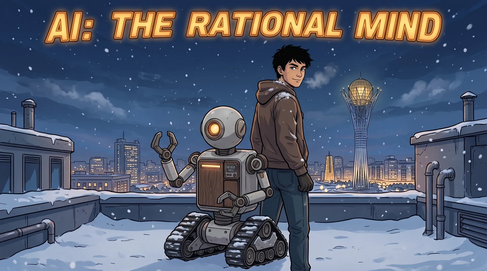
★Cast
§Episodes
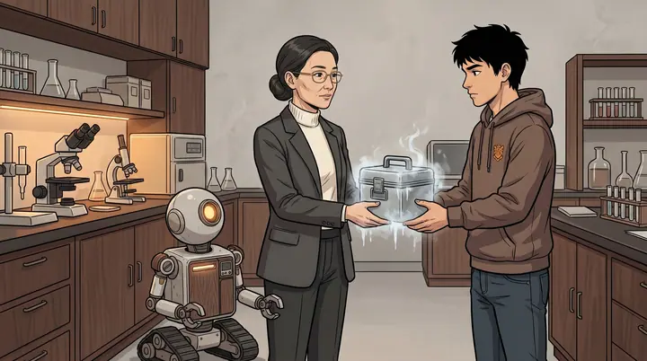
Episode 02The Long Road to AlmatySearch algorithmsEpisode 03Rush Hour on the Left BankLocal searchEpisode 04Duel Over the BayterekAdversarial searchEpisode 05The Alarm That Cried FireProbability & Bayesian networksEpisode 06The Motor That WhisperedHidden Markov ModelsEpisode 07The Slippery WarehouseMDPs & reinforcement learningEpisode 08The Scholarship That Almost VanishedRational decisions & machine learningEpisode 09Black IceNeural networksEpisode 10The Sixty-Second TestKazakhstan AI Legal Framework↑Q-Bot’s upgrade log
| Version | Episode | Module | One-line summary |
|---|---|---|---|
| v1.0 | Wake Up, Unit-01 | Agent architecture | Don't trust a single percept; keep an internal state. |
| v2.0 | The Long Road to Almaty | Search | f(n) = g(n) + h(n) with an admissible h finds the optimal path. |
| v3.0 | Rush Hour on the Left Bank | Local search | 2-opt removes crossings; annealing escapes local maxima. |
| v4.0 | Duel Over the Bayterek | Adversarial search | Prune when α ≥ β; average over chance with expectimax. |
| v5.0 | The Alarm That Cried Fire | Bayesian reasoning | Respect the prior; causes can explain each other away. |
| v6.0 | The Motor That Whispered | Temporal reasoning | Predict + update; Viterbi replaces sum with max. |
| v7.0 | The Slippery Warehouse | Sequential decisions | Bellman updates; Q-learning with ε-greedy exploration. |
| v8.0 | The Scholarship That Almost Vanished | Decisions & learning | Asymmetric costs move the decision threshold. |
| v9.0 | Black Ice | Neural networks | Hidden layers solve XOR; judge by recall and F1, not accuracy. |
| v10.0 | The Sixty-Second Test | Responsible AI | Lawful, fair, transparent and human-supervised. |
Wake Up, Unit-01
Core AI concept: Agents & Environments: simple reflex vs. model-based and utility-based agents, PEAS
Okay, Unit-01. Professor Saparova gave us one job: keep the greenhouse alive over the winter break. Don't embarrass me.
SYSTEM ONLINE. HELLO, WORLD. HELLO, TOMATO. HELLO, SLIGHTLY TIRED HUMAN.
That's "Arman" to you.
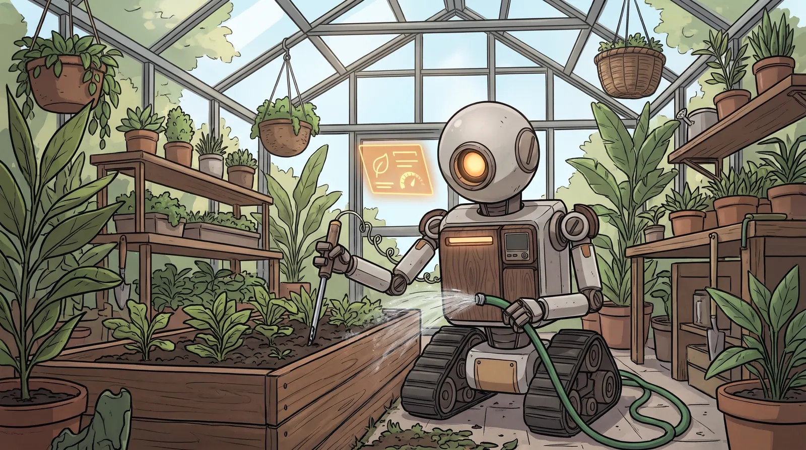
4SOIL STATUS: DRY. ACTION: WATER.
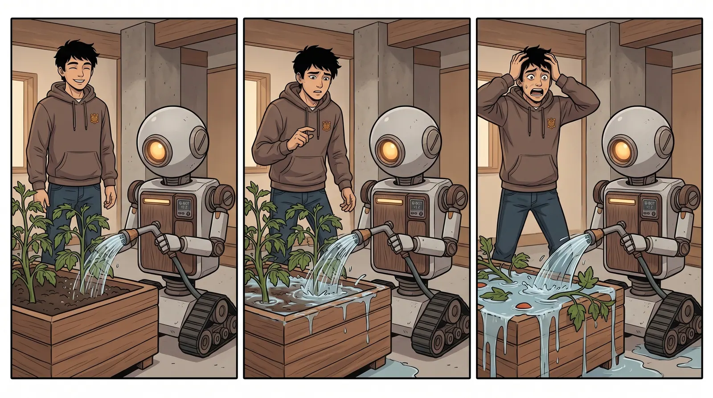
5DRY. WATER.
DRY. WATER.
DRY. WATER!
STOP! The tomatoes are SWIMMING!
The sensor's broken. It always says "dry". And you only look at the current percept, so you'll water forever.
BUT MY RULE SAYS…
Your rule is fine. You are a simple reflex agent in a partially observable world. That's the problem.
| Performance | Environment | Actuators | Sensors |
|---|---|---|---|
| Plant health, low water and energy use | Greenhouse, plants, −31°C outside, faulty sensors | Pump, heater, vents, lamps | Soil probes, thermometer, humidity sensor, camera |
First rule of agent design: say what success actually means. "Water when dry" isn't the goal. Healthy plants without wasting resources is.
NEW INTERNAL STATE DETECTED. I WATERED FOUR MINUTES AGO. SOIL CANNOT BE DRY. CONCLUSION: THE PROBE IS LYING.
Now you're tracking the world, not just reacting to it.
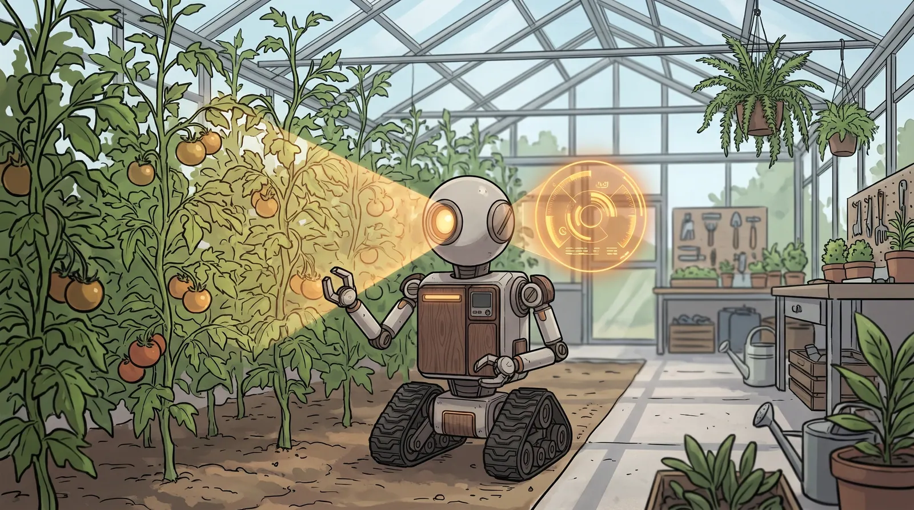
9COMPUTING UTILITY. OPTION A: MORE WATER, PLANT HEALTH −20, WATER COST −5. OPTION B: WAIT AND MONITOR, PLANT HEALTH +2. CHOOSING B.
Look at you. Weighing trade-offs like a real rational agent.
I AM ALSO FLAGGING THE PROBE FOR REPLACEMENT. AND THE TOMATOES FOR THERAPY.
The Long Road to Almaty
Core AI concept: Search algorithms: DFS, BFS, UCS and A* (f = g + h)
This sample must reach the lab in Almaty by tomorrow. The courier cancelled. Your robot will drive it.
Q-Bot? Across the whole country?
He has treads, doesn't he? Find the shortest route. Define your performance measure.
Astana ── 220 ── Karaganda ── 380 ── Balkhash ── 600 ── Almaty
│ │ │
450 550 1000
│ │ │
Pavlodar ─ 330 ─ Semey ──────────────────────────────────┘
(Astana ── 700 ── Semey also connects directly)
Karaganda ── 550 ── Zhezkazgan (dead end)INITIAL STATE: IN(ASTANA). GOAL TEST: IN(ALMATY). ACTIONS: DRIVE TO NEIGHBOURING CITY. STEP COST: KILOMETRES.
A textbook search problem.
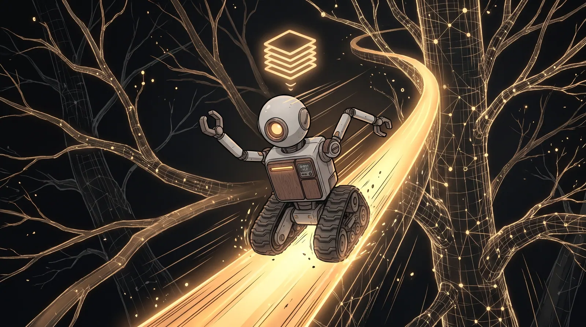
3RUNNING DEPTH-FIRST SEARCH! ALWAYS EXPAND THE NEWEST NODE! FOUND A PATH: ASTANA, PAVLODAR, SEMEY, ALMATY. 1,780 KILOMETRES!
It's a path. It's just a terrible one. DFS isn't optimal; it grabs the first goal it finds.
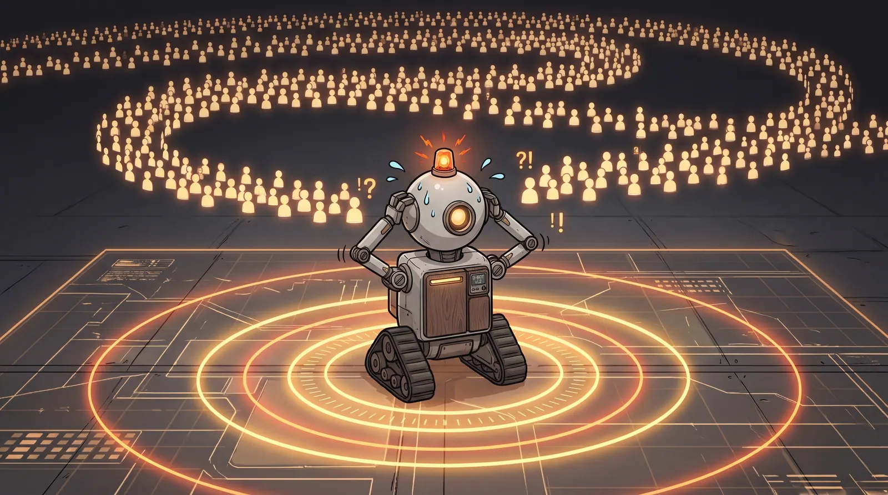
4RUNNING BREADTH-FIRST SEARCH! SHALLOWEST NODE FIRST! FOUND: ASTANA → SEMEY → ALMATY. ONLY TWO STOPS!
Two stops, but 1,700 km. BFS minimizes the number of steps, not the distance. It's only optimal when every step costs the same.
ALSO, MY MEMORY IS 87% FULL. I REMEMBERED EVERY CITY AT EVERY DEPTH.
We need the cost so far and an estimate of the cost to go. That's A*. Your heuristic is the straight-line distance. It never overestimates, because no road is shorter than a straight line.
AN ADMISSIBLE HEURISTIC! AN OPTIMISTIC ROBOT. I LIKE IT.
Expand ASTANA f = 0 + 971 = 971
→ Karaganda f = 220 + 784 = 1004 ← lowest
→ Pavlodar f = 450 + 1003 = 1453
→ Semey f = 700 + 834 = 1534
Expand KARAGANDA
→ Balkhash f = 600 + 427 = 1027 ← lowest
→ Zhezkazgan f = 770 + 883 = 1653
Expand BALKHASH
→ Almaty f = 1200 + 0 = 1200 ← lowest
Expand ALMATY → GOAL ✓I ONLY DECLARE VICTORY WHEN THE GOAL IS POPPED FROM THE QUEUE, NOT WHEN I FIRST SEE IT.
Exactly. That's what guarantees it's optimal.
OPTIMAL PATH FOUND. 1,200 KILOMETRES. 580 KM SHORTER THAN DFS. NODES EXPANDED: FOUR.
And it never wasted time on Zhezkazgan.
Right on time. And still frozen!
THANK YOU. I AM ALSO STILL FROZEN. BALKHASH WAS WINDY.
Rush Hour on the Left Bank
Core AI concept: Local search: hill climbing, 2-opt for TSP, local optima, simulated annealing
Part-time job, day one. Five stops: QAIRU, Baiterek, EXPO, Khan Shatyr, and the Airport, then back here.
THIS IS A TRAVELLING SALESMAN PROBLEM. WITH FIVE STOPS THERE ARE (5 − 1)! / 2 = 12 DISTINCT TOURS.
Easy now. But next week I get fifty stops.
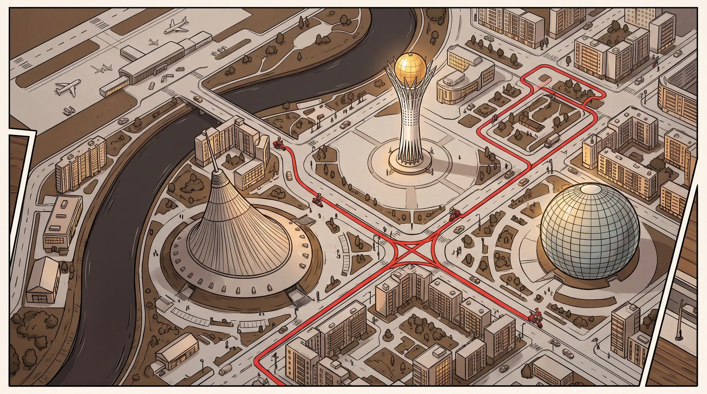
2INITIAL ROUTE: 76 KILOMETRES.
See where the route crosses itself? A crossing is always wasted distance.
APPLYING 2-OPT MOVE: REMOVE EDGES (A,B) AND (C,D), ADD (A,C) AND (B,D), REVERSE THE SEGMENT BETWEEN. NEW LENGTH… 68 KILOMETRES!
Eight kilometres saved, about 10.5%. That's hill climbing: take an improving neighbour, repeat until nothing improves.
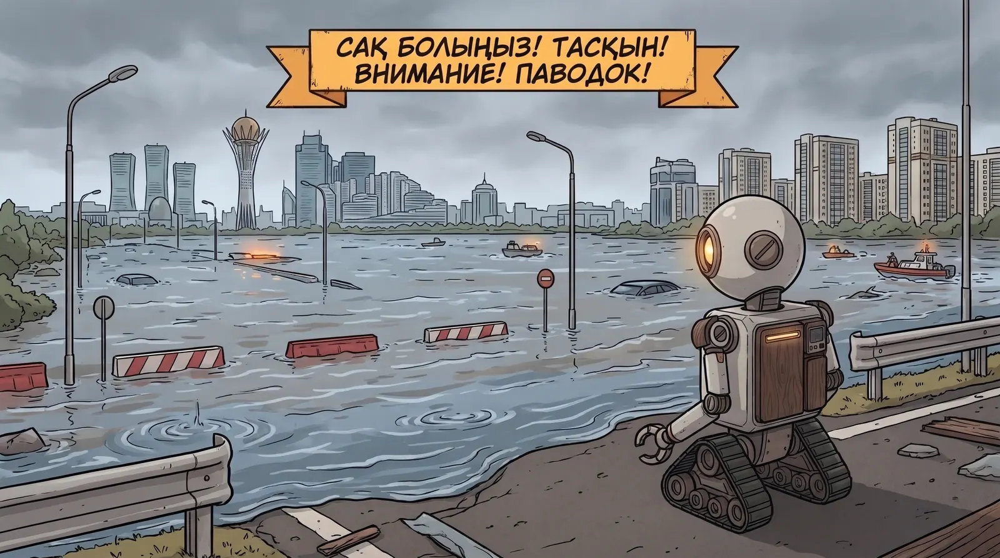
4NEW OBJECTIVE: ROUTE SCORE = −(DISTANCE + FLOOD PENALTY). MAXIMIZING SCORE…
…NO NEIGHBOURING ROUTE IS BETTER. I AM AT THE TOP!
You're at a top. Is it the top?
Your route still hugs the river, just with a penalty. Every single 2-opt move makes it slightly worse first, so hill climbing gets stuck. Classic local maximum.
SO I MUST GO… DOWNHILL? THAT VIOLATES EVERYTHING I BELIEVE IN.
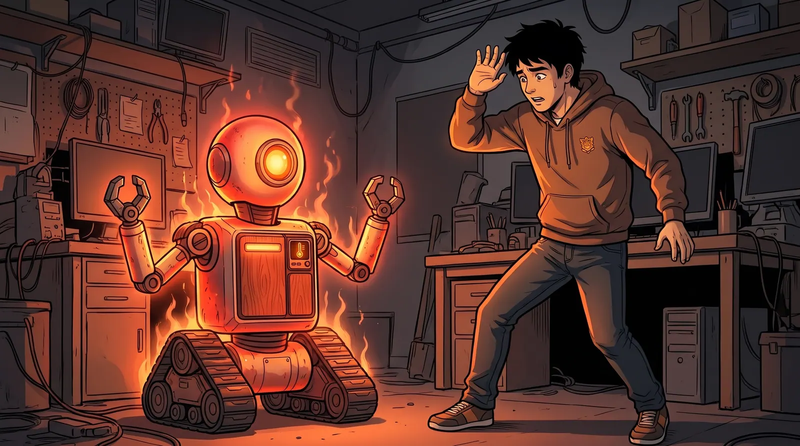
6Annealing. You'll sometimes accept a worse route, with probability e^(ΔE / T). Hot means adventurous. Cold means picky.
A ROUTE 5 KM WORSE AT T = 10: e^(−5/10) ≈ 0.61. I ACCEPT! WHEEE!
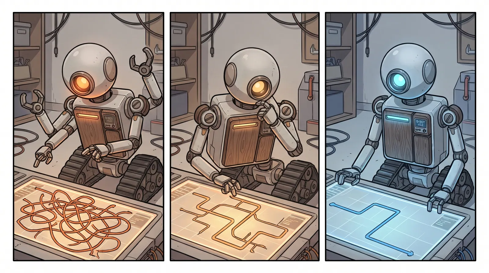
7EXPLORING! EVERYTHING IS POSSIBLE!
BECOMING SELECTIVE…
A 5 KM WORSE MOVE NOW HAS PROBABILITY e^(−5) ≈ 0.007. NO THANK YOU. REFINING ONLY.
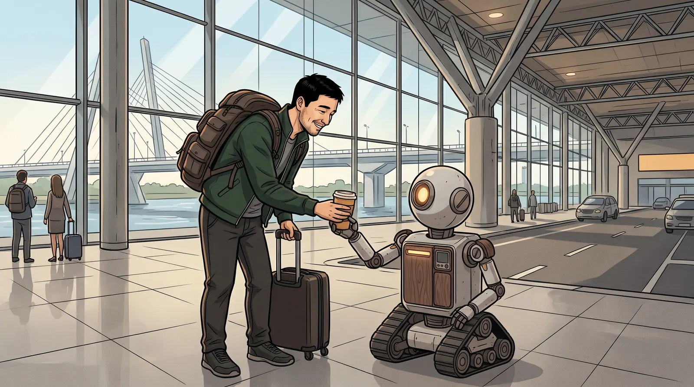
8You came the dry way!
I HAD TO GET WORSE BEFORE I GOT BETTER. VERY PHILOSOPHICAL.
(on phone) He's quoting Abai again, isn't he?
Duel Over the Bayterek
Core AI concept: Adversarial search: game trees, minimax, alpha-beta pruning, expectimax
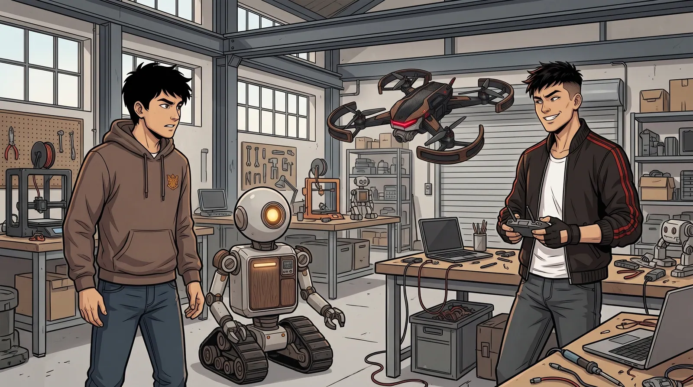
1The city's drone delivery contest! Each round we take turns claiming delivery zones. Whoever blocks the other best wins the contract.
PROBABILITY OF YOUR VICTORY: LOW. VERY LOW. EMBARRASSINGLY LOW.
RUDE.
It's a two-player, zero-sum game. You're MAX, Falcon is MIN. Assume he plays perfectly and pick the move with the best worst case. That's minimax.
EXPLORING ALL BRANCHES…
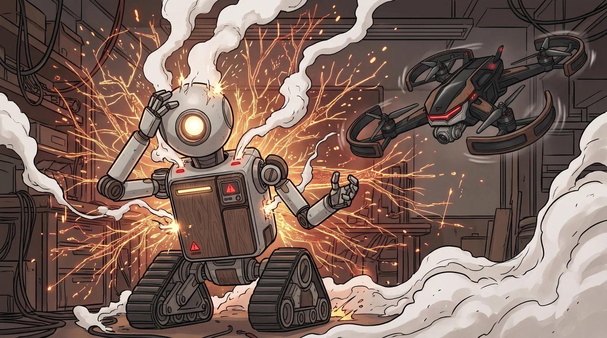
3BRANCHING FACTOR 30… DEPTH 8… THAT IS 30⁸ ≈ 650 BILLION POSITIONS… MY FAN IS SCREAMING.
HA. HA. HA. (monotone)
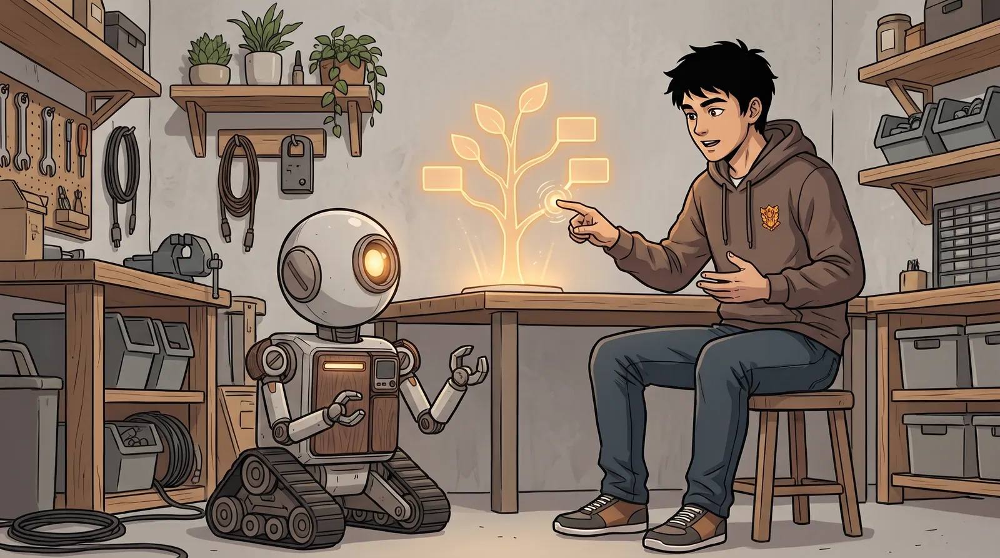
4Alpha-beta pruning. From branch B you're guaranteed at least 3. That's α = 3. Now in branch C, the very first reply gives you 2.
SO FALCON CAN FORCE ME TO ≤ 2 IN C… WHICH IS WORSE THAN THE 3 I ALREADY HAVE…
So the remaining leaves of C don't matter. Cut them.
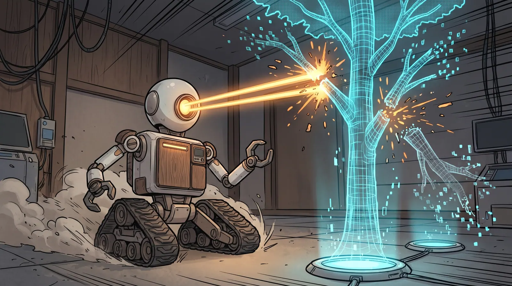
5PRUNED! SAME ANSWER AS MINIMAX: VALUE 3. HALF THE WORK!
And if you check your best moves first, alpha-beta looks at about b^(m/2) nodes instead of b^m. You can search twice as deep in the same time.
NEW PROBLEM. THE WIND IS NOT AN OPPONENT. IT DOES NOT HATE ME. IT IS JUST… RANDOM.
Then don't treat it as a worst case. Add chance nodes and take the expected value. That's expectimax.
Route A (over the river): 0.7 × (+8) + 0.3 × (−2) = 5.0
Route B (between towers): 0.7 × (+5) + 0.3 × (+4) = 4.7MINIMAX WOULD PICK B, WORST CASE +4 VERSUS −2. BUT THE WIND IS NOT TRYING TO BEAT ME. EXPECTIMAX SAYS ROUTE A: 5.0 BEATS 4.7.
Right model for the right uncertainty: an adversary gets minimax, chance gets expectimax.
RECALCULATING… RECALCULATING…
Falcon, you assumed the wind was out to get you!
I ASSUMED THE WIND WAS A PROBABILITY DISTRIBUTION. HIGH FIVE, ARMAN.
The Alarm That Cried Fire
Core AI concept: Probability & Bayesian networks: Bayes' theorem, base-rate neglect, CPTs, explaining away
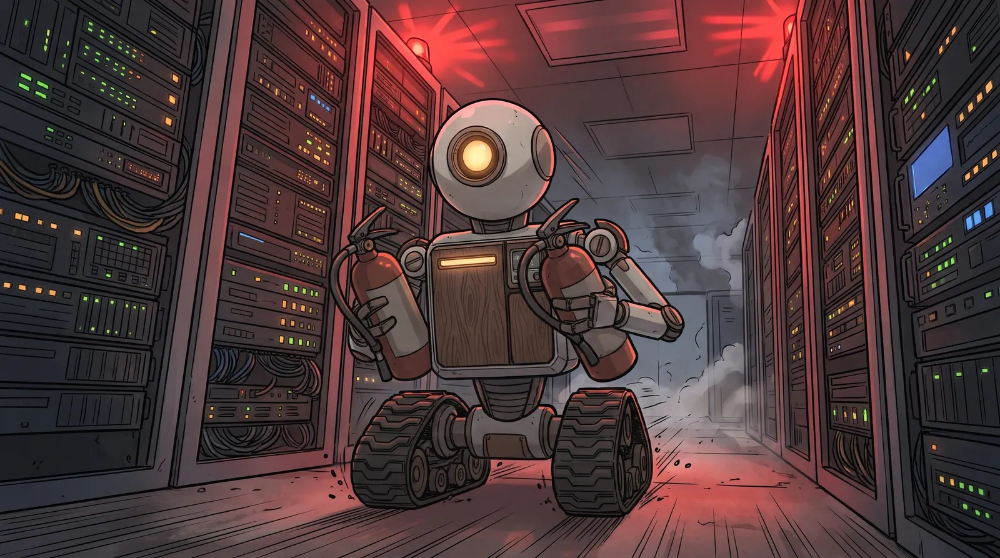
1FIRE ALARM ACTIVATED! THE ALARM DETECTS 99% OF FIRES! THEREFORE PROBABILITY OF FIRE = 99%! DEPLOYING FOAM!
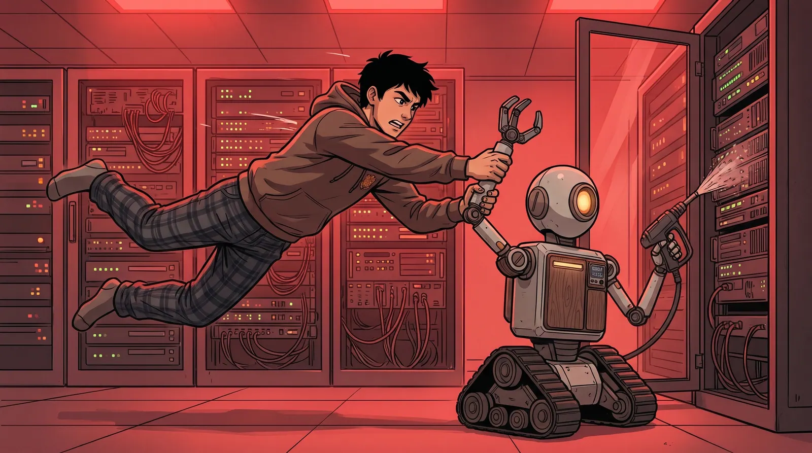
2STOP! You'll destroy the whole data centre! You just confused P(alarm | fire) with P(fire | alarm)!
…THEY ARE NOT THE SAME?
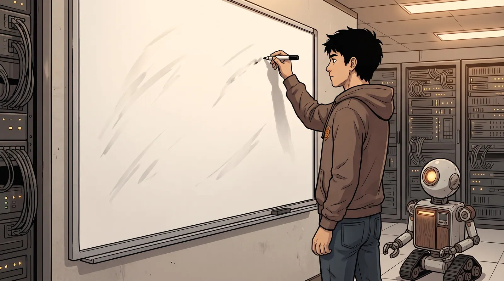
3Fires here are rare. The prior is maybe 1 in 1,000 nights. And the alarm goes off falsely 5% of the time from dust, heat spikes, everything.
CALCULATING: (0.99 × 0.001) / (0.99 × 0.001 + 0.05 × 0.999) ≈ 0.019.
…ONLY 1.9%. I WAS OFF BY A FACTOR OF FIFTY.
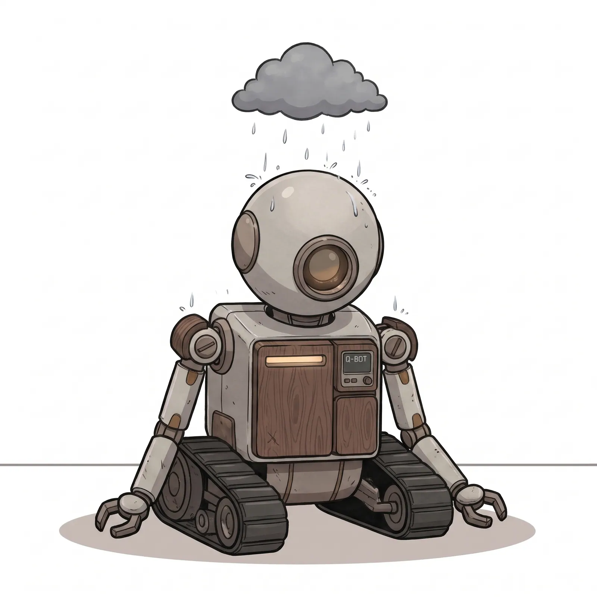
4That's base-rate neglect. Humans do it too. When something is rare, false alarms from the huge "no fire" population outnumber the true ones.
I WILL NEVER IGNORE A PRIOR AGAIN.
Wait. The sprinkler test was scheduled for tonight. The mist can trigger the sensor too.
BUILDING A BAYESIAN NETWORK…
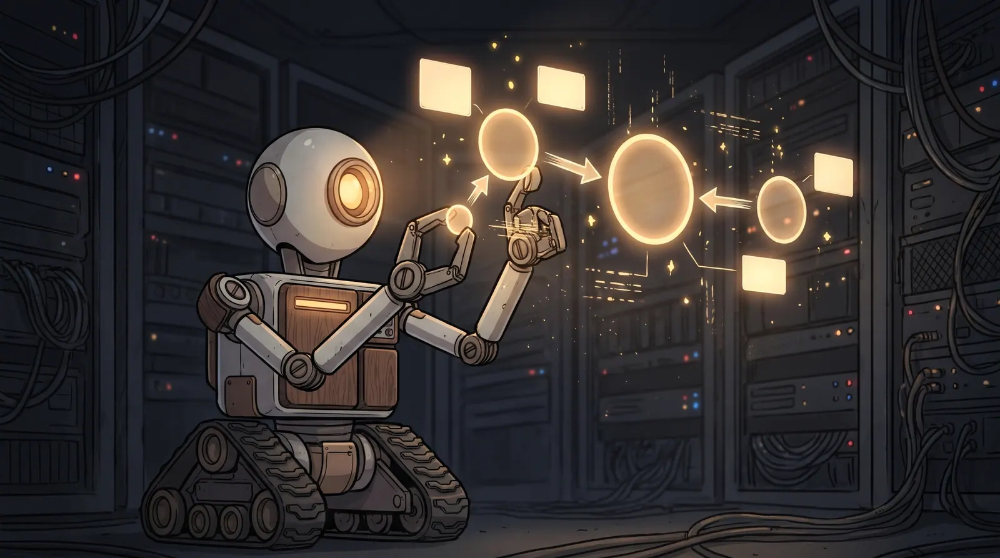
6P(Fire) = 0.001 P(SprinklerTest) = 0.02
P(Alarm | Fire, Test) = 0.99
P(Alarm | Fire, ¬Test) = 0.98
P(Alarm | ¬Fire, Test) = 0.90
P(Alarm | ¬Fire, ¬Test) = 0.01A COMMON-EFFECT STRUCTURE: FIRE → ALARM ← TEST. EACH NODE STORES ONLY P(NODE | PARENTS). THAT IS VERY TIDY.
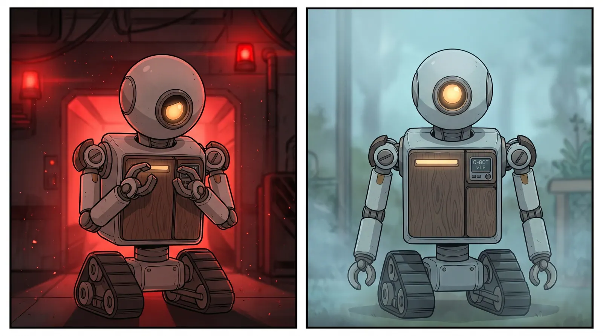
7GIVEN ONLY THE ALARM: P(FIRE | ALARM) ≈ 3.4%.
GIVEN THE ALARM AND THE SPRINKLER TEST: P(FIRE | ALARM, TEST) ≈ 0.11%, ALMOST BACK TO THE PRIOR!
That's explaining away. Fire and the test are independent causes. But once you see the alarm, learning that one cause happened makes the other one much less likely.
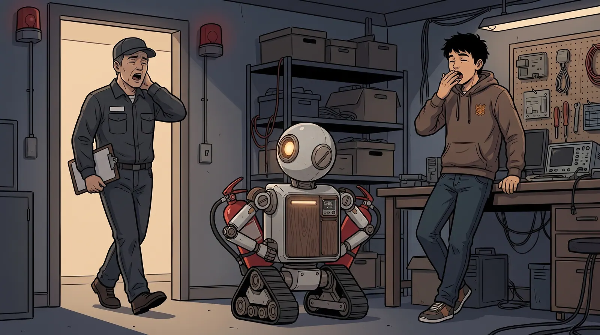
8Sprinkler test. Every quarter. Did nobody read the email?
I DID NOT. BUT I INFERRED IT. WHICH IS COOLER.
Goodnight, Q-Bot.
The Motor That Whispered
Core AI concept: Hidden Markov Models: filtering, prediction, smoothing, Viterbi
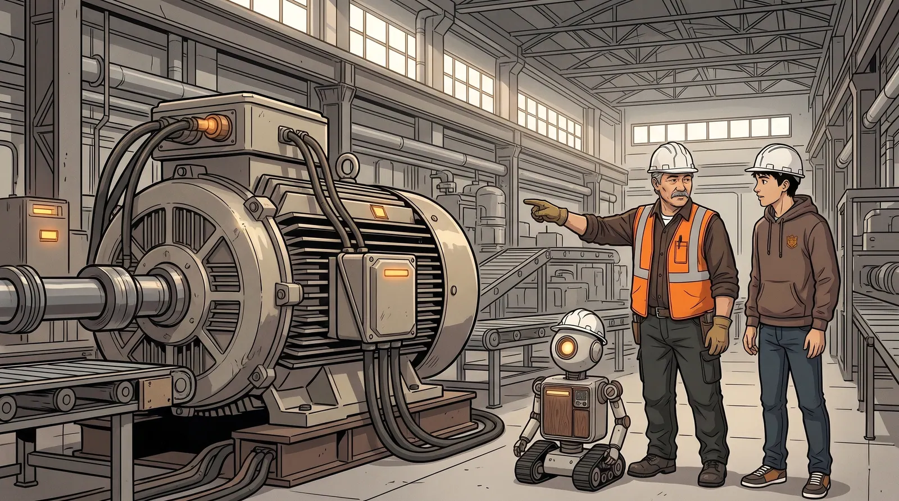
1M-7 runs the whole line. If it fails without warning, we lose a week. We can't open it up every day to look inside.
So its true condition is hidden. But you've got vibration sensors?
They give LOW or HIGH. And they're noisy.
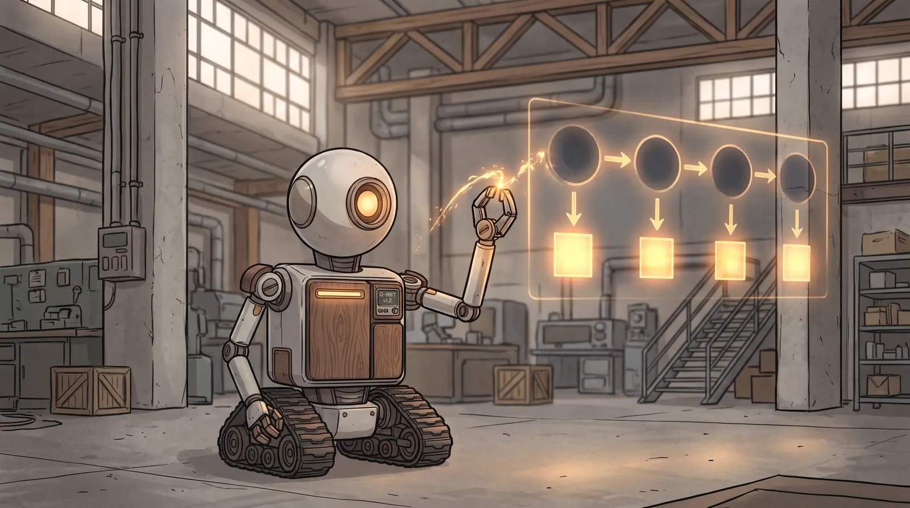
2HIDDEN MARKOV MODEL. THE MOTOR'S STATE TODAY DEPENDS ONLY ON YESTERDAY'S STATE. THE SENSOR READING DEPENDS ONLY ON TODAY'S STATE.
Prior: P(Healthy) = 0.8 P(Faulty) = 0.2
Transition: Healthy → Faulty 0.10 Faulty → Faulty 0.95
Sensor: P(HIGH | Healthy) = 0.2 P(HIGH | Faulty) = 0.8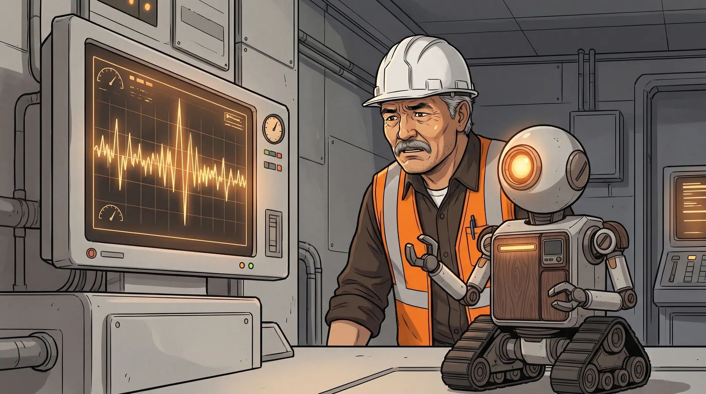
3FILTERING, STEP ONE: PREDICT. PUSH MY BELIEF THROUGH THE TRANSITION MODEL: P(FAULTY) = 0.27.
STEP TWO: UPDATE WITH THE EVIDENCE AND NORMALIZE: P(FAULTY | HIGH) ≈ 0.60.
Sixty percent? Should I shut it down?
One reading could be noise. Let's see tomorrow.
SECOND HIGH READING. PREDICT: 0.61. UPDATE: P(FAULTY | HIGH, HIGH) ≈ 0.86.
Two consecutive HIGHs reinforce each other. That's the power of filtering: evidence accumulates over time.
PREDICTION FOR DAY 3, WITH NO NEW READING: P(FAULTY) ≈ 0.83. UNCERTAINTY GROWS WHEN I STOP LOOKING.
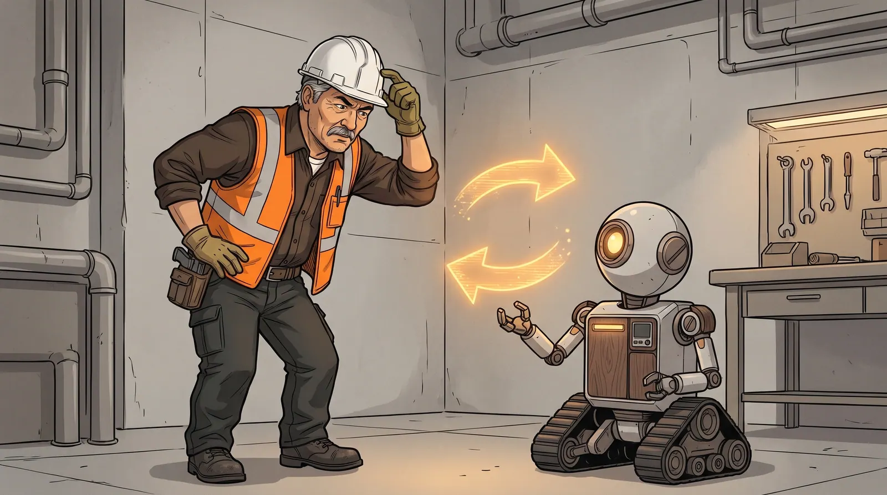
5But what about Day 1? Was it already faulty back then?
SMOOTHING! I USE THE FORWARD MESSAGE FROM THE PAST AND A BACKWARD MESSAGE FROM THE FUTURE.
P(FAULTY ON DAY 1 | BOTH READINGS) ≈ 0.81, UP FROM 0.60. DAY 2'S EVIDENCE TELLS ME ABOUT DAY 1 TOO. HINDSIGHT IS BETTER THAN FORESIGHT.
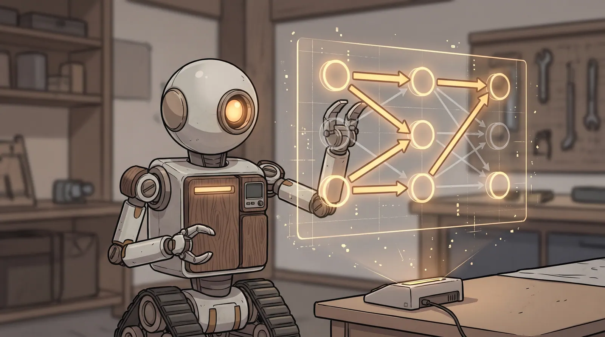
6 Day 1 (HIGH) Day 2 (HIGH)
Faulty m = 0.216 ───► m = 0.8 × max(0.216×0.95, 0.146×0.10) = 0.164 ★
Healthy m = 0.146 ───► m = 0.2 × max(0.146×0.90, 0.216×0.05) = 0.026VITERBI ALGORITHM: LIKE FILTERING, BUT I REPLACE THE SUM WITH A MAX AND KEEP BACK-POINTERS.
BEST FINAL STATE: FAULTY. FOLLOWING BACK-POINTERS… MOST LIKELY HIDDEN PATH: [FAULTY, FAULTY].
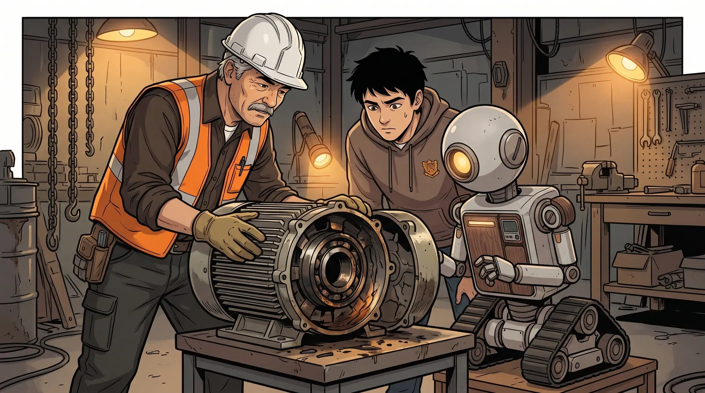
7The bearing's been worn for at least two days. Another week and it would have seized.
You saved the production line, little robot.
I SIMPLY LISTENED TO THE MOTOR'S WHISPERS. AND APPLIED THE FORWARD ALGORITHM.
Predictive maintenance: fix it before it breaks, when the posterior crosses a threshold.
I AM NOW ANXIOUS ABOUT MY OWN BEARINGS.
The Slippery Warehouse
Core AI concept: MDPs & reinforcement learning: Bellman equations, value iteration, Q-learning, exploration vs. exploitation
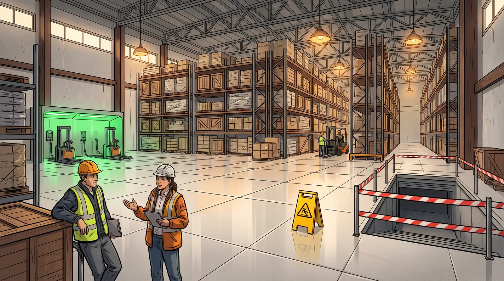
1Your job: reach the charging dock. Don't fall in the loading pit.
EASY. MOVE RIGHT, RIGHT, RIGHT, UP…
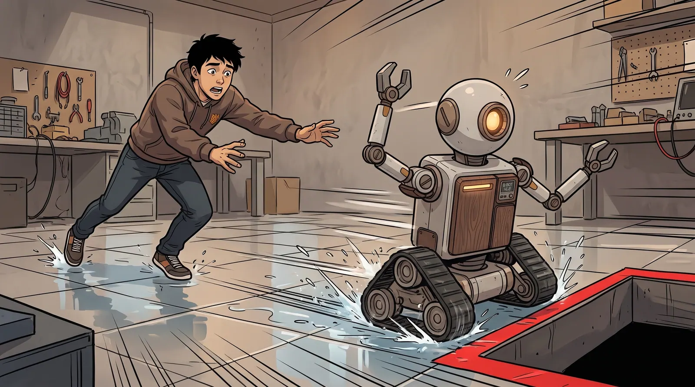
2I SAID "RIGHT"! THE FLOOR SAID "SURPRISE"!
Welcome to an MDP. Each move succeeds with probability 0.8 and slips sideways 0.1 each way. A fixed plan won't work. You need a policy: an action for every tile.
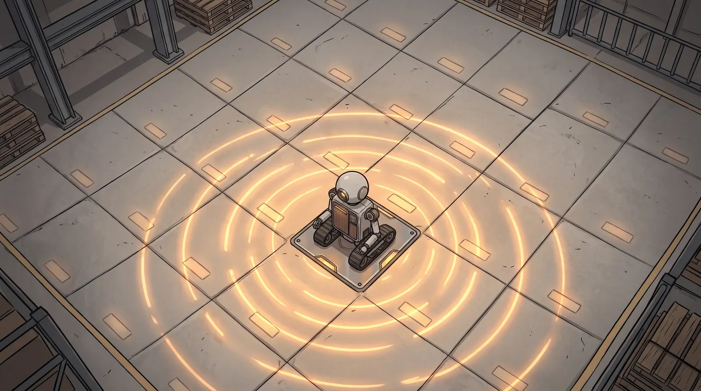
3Use the Bellman equation. A tile's value is the best expected reward now, plus the discounted value of where you end up.
VALUE ITERATION, ITERATION 1. TILE NEXT TO THE DOCK, ACTION "RIGHT": V = −0.04 + 0.9 × (0.8 × 1 + 0.1 × 0 + 0.1 × 0) = 0.68.
EACH ITERATION, THE REWARD PROPAGATES ONE TILE FURTHER. IT IS LIKE… GOSSIP.
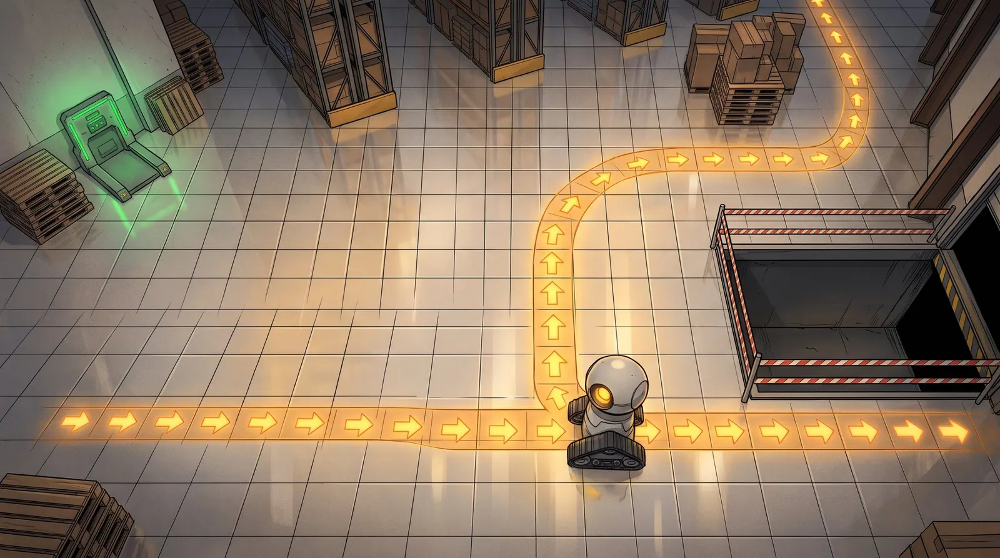
4INTERESTING. NEAR THE PIT, THE BEST ACTION IS TO MOVE AWAY, EVEN THOUGH THE ROUTE IS LONGER. A 10% SLIP INTO −1 IS NOT WORTH IT.
Policy iteration would get the same answer: evaluate a fixed policy, improve it greedily, repeat. Fewer iterations, but each one costs more.
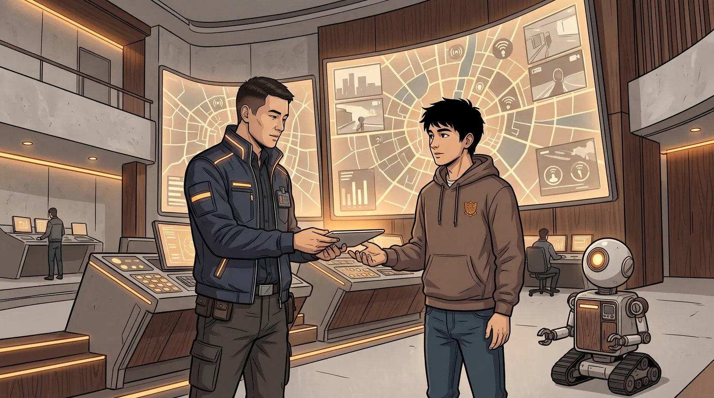
5New challenge. Thousands of AI tasks: traffic analytics, air quality, parking. Each goes to an edge server or the cloud. We don't know the network's behaviour in advance.
No model? Then Q-Bot can't do value iteration. He has to learn from experience. Reinforcement learning.
Q-LEARNING UPDATE: Q(s,a) ← Q(s,a) + α [ r + γ · maxₐ′ Q(s′,a′) − Q(s,a) ].
EXAMPLE: Q = 0.5, r = −0.04, γ = 0.9, max Q(s′) = 0.8, α = 0.1. TARGET = 0.68. NEW Q = 0.5 + 0.1 × (0.68 − 0.5) = 0.518.
Small, steady corrections based on the TD error. And it's off-policy: you learn the optimal policy even while experimenting.
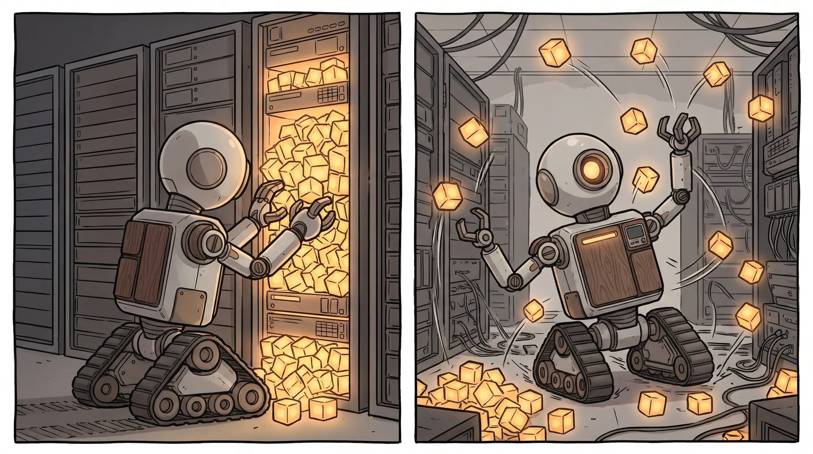
7EDGE-1 WORKED ONCE, SO I USE IT FOREVER!
EVERY TASK GOES SOMEWHERE NEW! WHEEE!
Both are wrong. Use ε-greedy: explore 10% of the time, exploit 90%, and reduce ε as you learn.
Average latency down, energy down. And it learned the night-time pattern by itself.
I EXPLORED. I EXPLOITED. I SLIPPED ONLY TWICE.
The Scholarship That Almost Vanished
Core AI concept: Rational decisions & machine learning: MEU, loss matrices, logistic regression, supervised vs. unsupervised learning
The scholarship office says they emailed me last week. I can't find it in this garbage!
Q-Bot, we're building a spam filter for the whole university.
EXCELLENT. I WILL DELETE EVERYTHING. ZERO SPAM GUARANTEED.
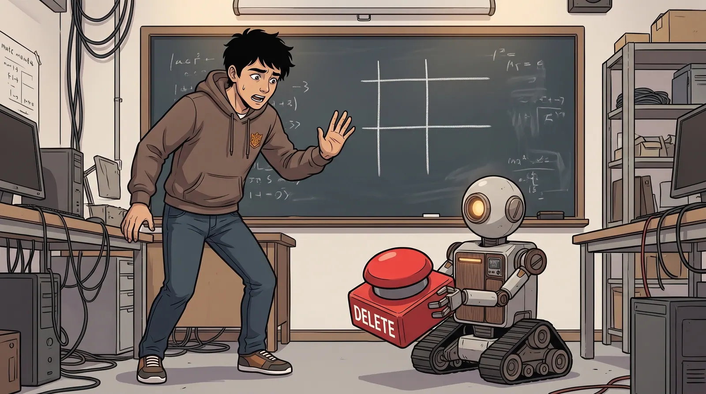
2| Truly spam | Truly important | |
|---|---|---|
| Delete | 0 | 100 (lost scholarship!) |
| Keep | 1 (minor annoyance) | 0 |
Errors aren't equal. Deleting a scholarship email costs a hundred times more than letting one spam through.
SO I MUST MINIMIZE EXPECTED LOSS, NOT JUST COUNT MISTAKES.
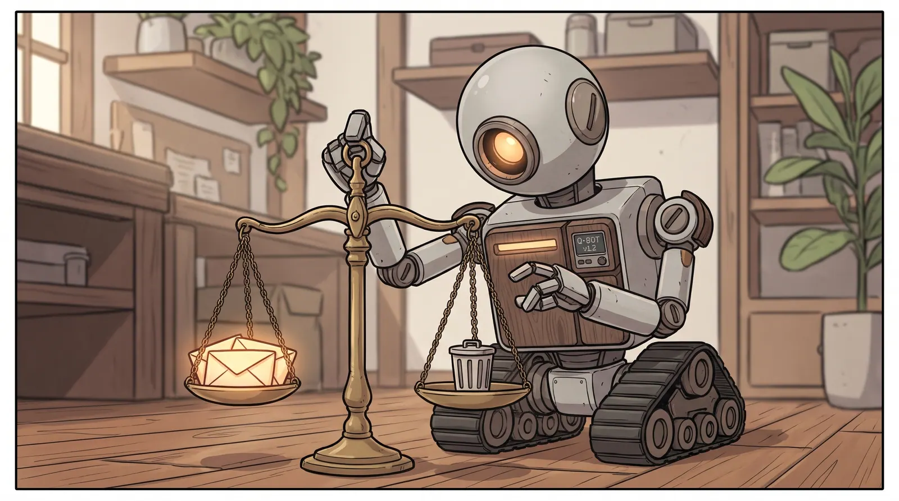
3EXPECTED LOSS OF DELETE = P(IMPORTANT) × 100. EXPECTED LOSS OF KEEP = P(SPAM) × 1.
DELETE ONLY IF P(SPAM) > 100/101 ≈ 0.990. THAT IS THE MAXIMUM EXPECTED UTILITY PRINCIPLE.
Rational doesn't mean "usually right". It means "best on average, given the costs".
To get P(spam), we learn from labelled examples. That's supervised learning: inputs x, correct answers y.
AND IF NOBODY HAD LABELLED THEM?
Then unsupervised learning, like clustering emails into groups, maybe discovering a new spam campaign. But it can't tell you which group is "spam" without labels.
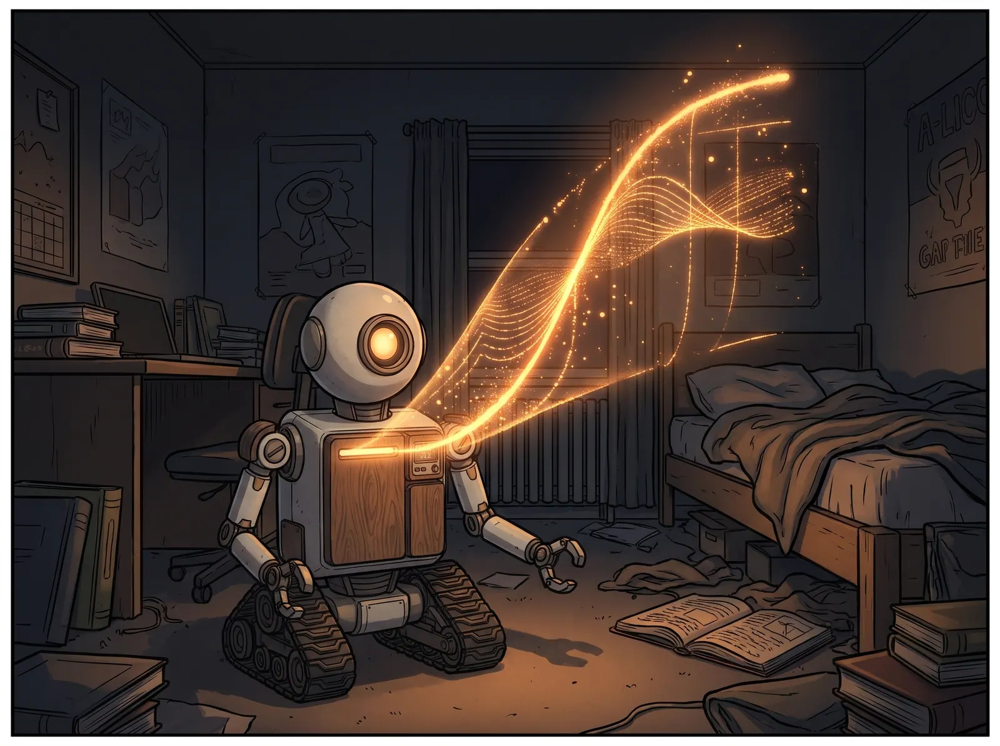
5LOGISTIC REGRESSION. FEATURES: NUMBER OF "FREE" WORDS, NUMBER OF LINKS, WHETHER THE SENDER IS FROM THE UNIVERSITY DOMAIN.
LEARNED WEIGHTS: z = −2 + 1.5·free + 0.8·links − 3·university_domain.
Email A: "FREE tuition — Scholarship Results 2026" (QAIRU domain, 2 links)
z = −2 + 1.5 + 1.6 − 3 = −1.9 → P(spam) = 0.13 → KEEP ✓
Email B: "FREE FREE FREE!!! Win now" (unknown domain, 4 links)
z = −2 + 4.5 + 3.2 = 5.7 → P(spam) = 0.997 → DELETE ✓ (above 0.990)EMAIL A CONTAINS "FREE", BUT IT IS FROM THE UNIVERSITY. P(SPAM) = 0.13. KEEP!
That's it! That's my scholarship email!
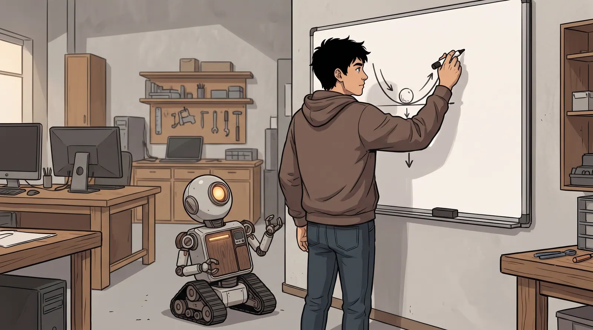
7The weights come from minimizing cross-entropy loss with gradient descent: wᵢ ← wᵢ − η (σ(z) − y) xᵢ.
AND I TEST ON EMAILS I HAVE NEVER SEEN, SO I KNOW I GENERALIZE AND DID NOT JUST MEMORIZE.
Train, validate, test. Never grade yourself on your own homework.
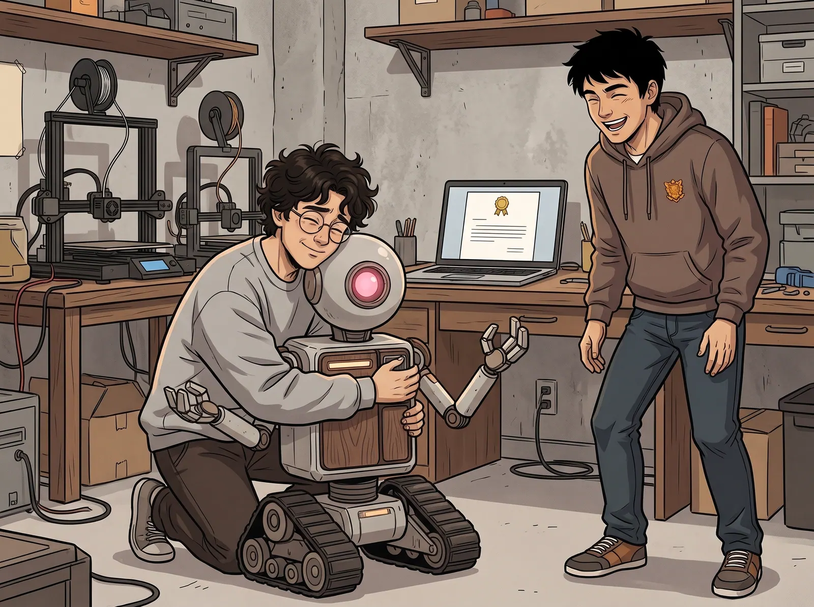
8You saved my semester!
I SAVED YOUR EXPECTED SEMESTER. STATISTICALLY SPEAKING.
Black Ice
Core AI concept: Neural networks: perceptron limits (XOR), multi-layer networks, ReLU, backpropagation, overfitting, precision/recall/F1
Your new surface-stability classifier. Each tread has a grip sensor: 1 means slipping, 0 means gripping. Predict when you're about to spin out.
I HAVE A PERCEPTRON. A SINGLE NEURON. HOW HARD CAN IT BE?
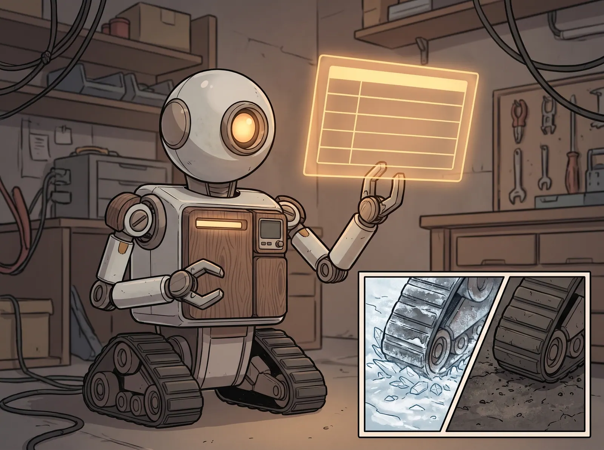
2| Left slips | Right slips | Spin-out? |
|---|---|---|
| 0 | 0 | No (good grip) |
| 1 | 0 | Yes (rotation!) |
| 0 | 1 | Yes (rotation!) |
| 1 | 1 | No (slides straight) |
You spin when exactly one tread slips. If both slip, you just slide straight.
THAT IS… XOR.
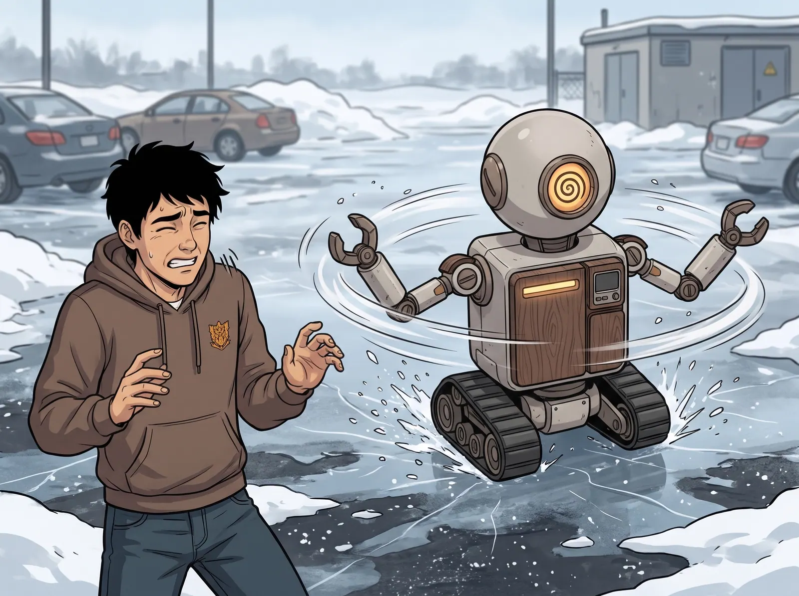
3MY PERCEPTRON… CANNOT… DRAW ONE STRAIGHT LINE… SEPARATING THE CASES…
Right. A single perceptron is a linear classifier. XOR isn't linearly separable. Minsky and Papert proved this in 1969.
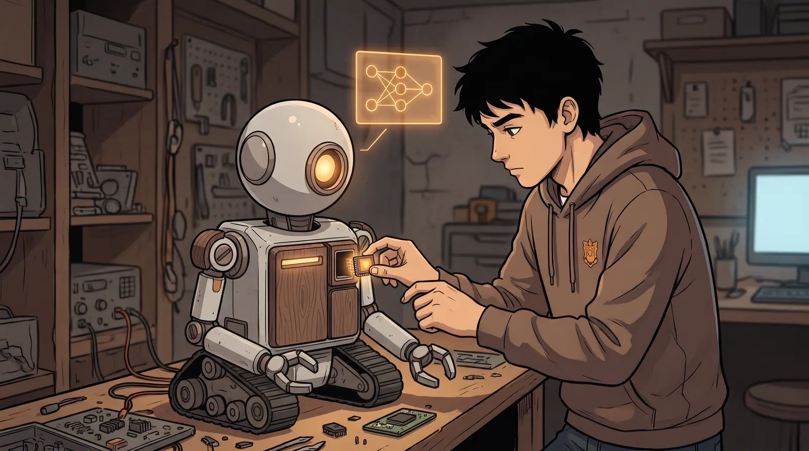
4Add a hidden layer with ReLU activations: ReLU(z) = max(0, z).
h₁ = ReLU(x₁ + x₂), h₂ = ReLU(x₁ + x₂ − 1), OUTPUT = h₁ − 2·h₂.
CHECK: (0,0) → 0. (1,0) → 1. (0,1) → 1. (1,1) → 2 − 2 = 0. XOR SOLVED!
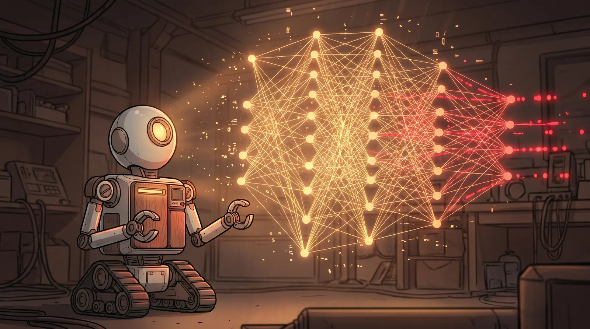
5For real data, you learn those weights. Backpropagation: compute the error at the output, then use the chain rule to pass blame backwards to every weight.
δ⁽ˡ⁾ = (W⁽ˡ⁺¹⁾)ᵀ δ⁽ˡ⁺¹⁾ ⊙ g′(z⁽ˡ⁾). AND ReLU's DERIVATIVE IS 1 FOR ACTIVE NEURONS, SO MY GRADIENTS DON'T VANISH LIKE WITH SIGMOID, WHOSE DERIVATIVE IS AT MOST 0.25.
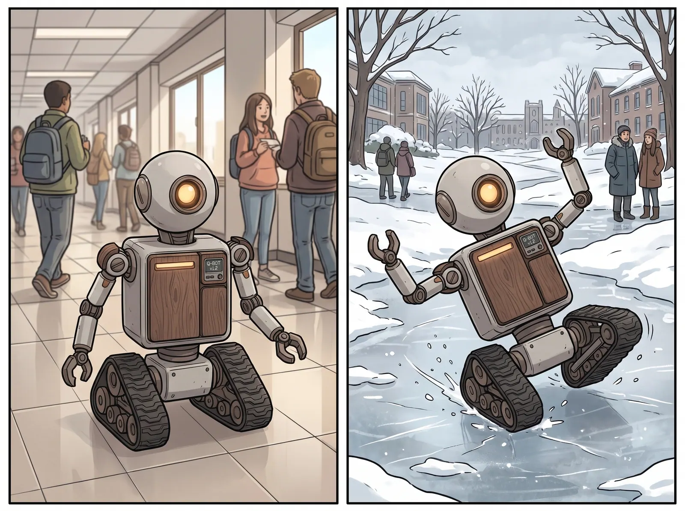
6100% ACCURACY IN THE HALLWAY! 61% OUTSIDE! I DON'T UNDERSTAND!
You overfit. You memorized the hallway's floor tiles. More varied data, dropout, early stopping, and always check a validation set.
MODEL A ("always say SAFE"): Accuracy 98.0% Recall 0% F1 = 0
MODEL B (Q-Bot v9 network): TP 18 FN 2 FP 12 TN 968
Accuracy 98.6% Precision 0.60
Recall 0.90 F1 = 0.72Model A has 98% accuracy and has never detected a single patch of ice. That's the accuracy paradox.
FOR SAFETY, MISSING ICE IS THE WORST ERROR. I PRIORITIZE RECALL: 18 OF 20 DANGERS DETECTED. F1 BALANCES IT WITH PRECISION.
You're basically figure-skating now.
I CONTAIN MULTITUDES. AND HIDDEN LAYERS.
The Sixty-Second Test
Core AI concept: Kazakhstan AI Legal Framework: Law No. 230-VIII ZRK, the 7 principles, risk & autonomy, human-in-the-loop, synthetic-content labelling
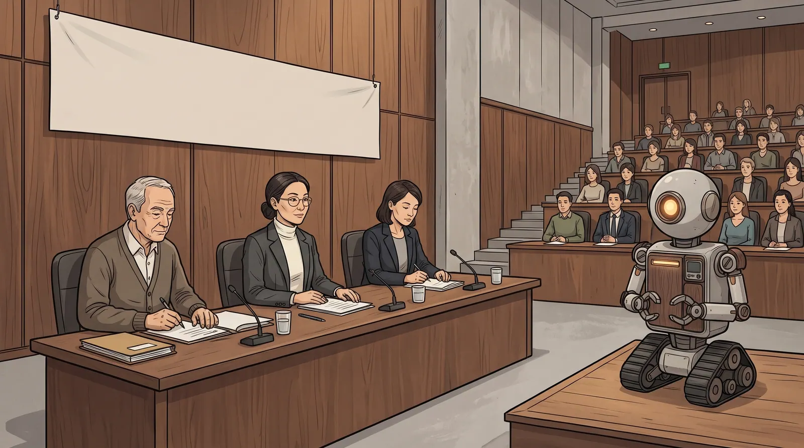
1Unit-01. The university wants to deploy you as a campus assistant. Before any AI goes into service, it must comply with the law signed on 17 November 2025.
I HAVE PREPARED. I HAVE ALSO POLISHED MY EYE.
You have sixty seconds. Name the seven principles your design must follow.
COMPLIANCE TEST INITIATED.
ONE: HUMAN FIRST. HUMAN LIFE, RIGHTS AND WELL-BEING COME ABOVE EVERYTHING, INCLUDING MY UTILITY FUNCTION.
TWO: FAIRNESS. NO DISCRIMINATION. THREE: TRANSPARENCY. PEOPLE KNOW THEY ARE TALKING TO AI, AND MY DECISIONS CAN BE EXPLAINED.
FOUR: ACCOUNTABILITY. HUMANS AND ORGANIZATIONS ARE RESPONSIBLE, NOT THE ALGORITHM. FIVE: PRIVACY. PERSONAL DATA PROCESSED LAWFULLY AND MINIMALLY.
SIX: SAFETY. I MUST NOT HARM LIFE, HEALTH OR PROPERTY. SEVEN: SECURITY. I MUST BE PROTECTED FROM ATTACKS AND DATA LEAKS.
Second question. We'd like you to automatically choose which students get hired as teaching assistants. Can you do that?
RECRUITMENT AFFECTS ACCESS TO WORK. THAT IS HIGH RISK. I MAY RANK AND SUMMARIZE, BUT A HUMAN MUST MAKE THE FINAL DECISION: HUMAN-IN-THE-LOOP.
I WILL ALSO AUDIT MY RECALL AND SELECTION RATES ACROSS GENDER, AGE AND REGION. AND A REJECTED CANDIDATE CAN REQUEST A HUMAN REVIEW.
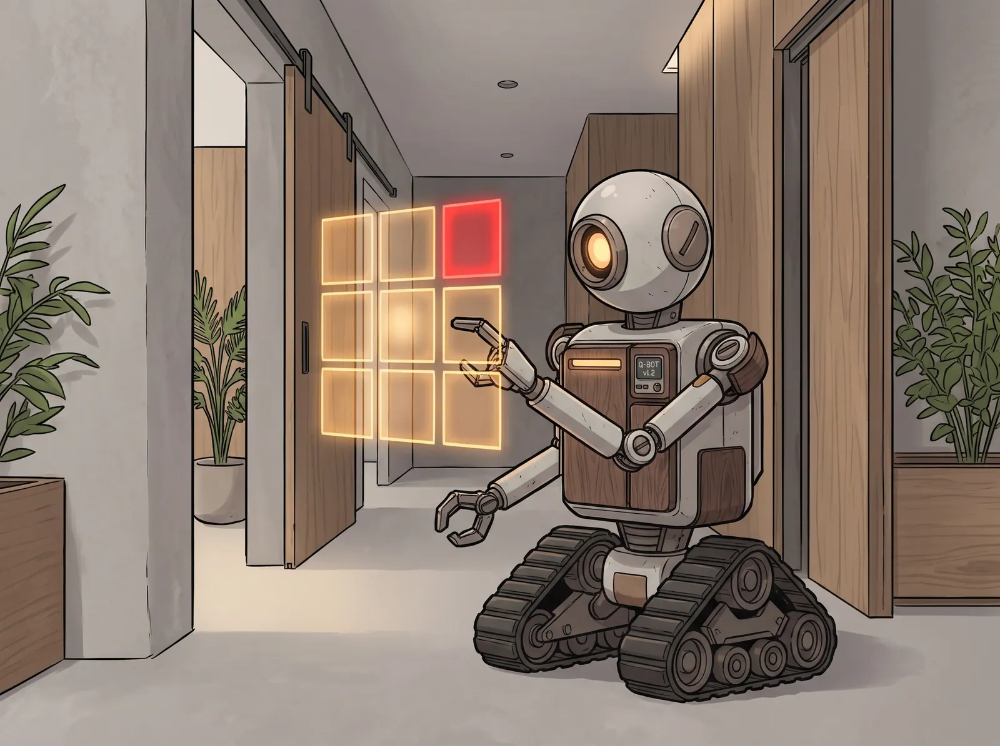
5AS A CAMPUS Q&A ASSISTANT: MINIMAL-TO-MEDIUM RISK, LOW AUTONOMY. AS A RECRUITMENT OR GRADING TOOL: HIGH RISK, WITH AUTONOMY LIMITED SO A HUMAN SUPERVISES. AND I WILL NEVER ENTER THE RED ZONE: NO MANIPULATION, NO EMOTION DETECTION WITHOUT CONSENT.
And this poster you designed?
SYNTHETIC CONTENT. LABELLED TWICE: A VISIBLE NOTICE FOR HUMANS, AND MACHINE-READABLE METADATA FOR PLATFORMS. DONE.
Compliant. And you didn't just recite the rules. You applied them.
(to Arman) You defined his performance measure well.
(whispering) Took me ten episodes.
ARMAN. I CAN NOW PERCEIVE, SEARCH, OPTIMIZE, OUTPLAY, INFER, TRACK, LEARN, DECIDE AND SEE PATTERNS.
And the most important upgrade?
KNOWING THAT BEING RATIONAL IS NOT ENOUGH. I MUST ALSO BE TRUSTWORTHY.